<!DOCTYPE html>

<html>
  <head>
    <meta charset="utf-8" />
    <meta name="viewport" content="width=device-width, initial-scale=1.0" />
    <title>45. Production Smoothing via Inventories &#8212; Quantitative Economics with Python</title>
    <link rel="stylesheet" href="_static/quantecon-book-theme.css" type="text/css" />
    <link rel="stylesheet" href="_static/pygments.css" type="text/css" />
    <link rel="stylesheet" type="text/css" href="_static/togglebutton.css" />
    <link rel="stylesheet" type="text/css" href="_static/copybutton.css" />
    <link rel="stylesheet" type="text/css" href="_static/mystnb.css" />
    <link rel="stylesheet" type="text/css" href="_static/sphinx-thebe.css" />
    <link rel="stylesheet" type="text/css" href="_static/panels-main.c949a650a448cc0ae9fd3441c0e17fb0.css" />
    <link rel="stylesheet" type="text/css" href="_static/panels-variables.06eb56fa6e07937060861dad626602ad.css" />
    <script id="documentation_options" data-url_root="./" src="_static/documentation_options.js"></script>
    <script src="_static/quantecon-book-theme.js"></script>
    <script src="_static/jquery.js"></script>
    <script src="_static/underscore.js"></script>
    <script src="_static/doctools.js"></script>
    <script src="_static/language_data.js"></script>
    <script src="_static/togglebutton.js"></script>
    <script src="_static/clipboard.min.js"></script>
    <script src="_static/copybutton.js"></script>
    <script src="_static/quantecon-book-theme.js"></script>
    <script >var togglebuttonSelector = '.toggle, .admonition.dropdown, .tag_hide_input div.cell_input, .tag_hide-input div.cell_input, .tag_hide_output div.cell_output, .tag_hide-output div.cell_output, .tag_hide_cell.cell, .tag_hide-cell.cell';</script>
    <script src="_static/sphinx-book-theme.7d483ff0a819d6edff12ce0b1ead3928.js"></script>
    <script async="async" src="https://cdnjs.cloudflare.com/ajax/libs/mathjax/2.7.7/latest.js?config=TeX-AMS-MML_HTMLorMML"></script>
    <script type="text/x-mathjax-config">MathJax.Hub.Config({"tex2jax": {"inlineMath": [["\\(", "\\)"]], "displayMath": [["\\[", "\\]"]], "processRefs": false, "processEnvironments": false}})</script>
    <script async="async" src="https://unpkg.com/thebelab@latest/lib/index.js"></script>
    <script >
        const thebe_selector = ".thebe"
        const thebe_selector_input = "pre"
        const thebe_selector_output = ".output"
    </script>
    <script async="async" src="_static/sphinx-thebe.js"></script>
    <link rel="canonical" href="https://python.quantecon.org/lq_inventories.html" />
    <link rel="shortcut icon" href="_static/lectures-favicon.ico"/>
    <link rel="index" title="Index" href="genindex.html" />
    <link rel="search" title="Search" href="search.html" />
    <link rel="next" title="46. Schelling’s Segregation Model" href="schelling.html" />
    <link rel="prev" title="44. Permanent Income II: LQ Techniques" href="perm_income_cons.html" />

<!-- Normal Meta Tags -->
<meta name="author" context="Thomas J. Sargent &amp; John Stachurski" />
<meta name="keywords" content="Python, QuantEcon, Quantitative Economics, Economics, Sloan, Alfred P. Sloan Foundation, Tom J. Sargent, John Stachurski" />
<meta name="description" content=This website presents a set of lectures on quantitative economic modeling, designed and written by Thomas J. Sargent and John Stachurski. />

<!-- Twitter tags -->
<meta name="twitter:card" content="summary" />
<meta name="twitter:site" content="@quantecon" />
<meta name="twitter:title" content="Production Smoothing via Inventories"/>
<meta name="twitter:description" content="This website presents a set of lectures on quantitative economic modeling, designed and written by Thomas J. Sargent and John Stachurski.">
<meta name="twitter:creator" content="@quantecon">
<meta name="twitter:image" content="https://assets.quantecon.org/img/qe-twitter-logo.png">

<!-- Opengraph tags -->
<meta property="og:title" content="Production Smoothing via Inventories" />
<meta property="og:type" content="website" />
<meta property="og:url" content="https://python.quantecon.org/lq_inventories.html" />
<meta property="og:image" content="https://assets.quantecon.org/img/qe-og-logo.png" />
<meta property="og:description" content="This website presents a set of lectures on quantitative economic modeling, designed and written by Thomas J. Sargent and John Stachurski." />
<meta property="og:site_name" content="Quantitative Economics with Python" />

<meta name="theme-color" content="#ffffff" />


  </head>
<body>


    <span id="top"></span>

    <div class="wrapper">

        <div class="main">

            <div class="page">

                <div class="page__toc">

                    <div class="inner">

                        
                        <div class="page__toc-header">
                            On this page
                        </div>


                        <nav id="bd-toc-nav" class="page__toc-nav">

                            <ul class="nav section-nav flex-column">
                                
                                <li class="nav-item toc-entry toc-h2">
                                    <a href="#overview" class="nav-link">Overview</a>
                                </li>
                                
                                <li class="nav-item toc-entry toc-h2">
                                    <a href="#example-1" class="nav-link">Example 1</a>
                                </li>
                                
                                <li class="nav-item toc-entry toc-h2">
                                    <a href="#inventories-not-useful" class="nav-link">Inventories Not Useful</a>
                                </li>
                                
                                <li class="nav-item toc-entry toc-h2">
                                    <a href="#inventories-useful-but-are-hardwired-to-be-zero-always" class="nav-link">Inventories Useful but are Hardwired to be Zero Always</a>
                                </li>
                                
                                <li class="nav-item toc-entry toc-h2">
                                    <a href="#example-2" class="nav-link">Example 2</a>
                                </li>
                                
                                <li class="nav-item toc-entry toc-h2">
                                    <a href="#example-3" class="nav-link">Example 3</a>
                                </li>
                                
                                <li class="nav-item toc-entry toc-h2">
                                    <a href="#example-4" class="nav-link">Example 4</a>
                                </li>
                                
                                <li class="nav-item toc-entry toc-h2">
                                    <a href="#example-5" class="nav-link">Example 5</a>
                                </li>
                                
                                <li class="nav-item toc-entry toc-h2">
                                    <a href="#example-6" class="nav-link">Example 6</a>
                                </li>
                                
                                <li class="nav-item toc-entry toc-h2">
                                    <a href="#exercises" class="nav-link">Exercises</a><ul class="nav section-nav flex-column">
                                        
                                <li class="nav-item toc-entry toc-h3">
                                    <a href="#exercise-1" class="nav-link">Exercise 1</a>
                                </li>
                                
                                <li class="nav-item toc-entry toc-h3">
                                    <a href="#exercise-2" class="nav-link">Exercise 2</a>
                                </li>
                                
                                <li class="nav-item toc-entry toc-h3">
                                    <a href="#solution-1" class="nav-link">Solution 1</a>
                                </li>
                                
                                <li class="nav-item toc-entry toc-h3">
                                    <a href="#solution-2" class="nav-link">Solution 2</a>
                                </li>
                                
                                    </ul>
                                </li>
                                
                            </ul>

                            <p class="logo">
                                
                                    
                                    <a href=https://quantecon.org></a>
                                    
                                
                            </p>

                            <p class="powered">Powered by <a href="https://jupyterbook.org/">Jupyter Book</a></p>

                        </nav>

                        <div class="page__toc-footer">
                            
                            
                            <p><a href="#top"><strong>Back to top</strong></a></p>
                        </div>

                    </div>

                </div>

                <div class="page__header">

                    <div class="page__header-copy">

                        <p class="page__header-heading"><a href="intro.html">Quantitative Economics with Python</a></p>

                        <p class="page__header-subheading">Production Smoothing via Inventories</p>

                    </div>

                    <p class="page__header-authors">Thomas J. Sargent & John Stachurski</p>

                </div> <!-- .page__header -->


                
                <main class="page__content" role="main">
                    
                    <div>
                        
  <div id="qe-notebook-header" align="right" style="text-align:right;">
        <a href="https://quantecon.org/" title="quantecon.org">
                
        </a>
</div><div class="section" id="production-smoothing-via-inventories">
<h1><a class="toc-backref" href="#id2"><span class="section-number">45. </span>Production Smoothing via Inventories</a><a class="headerlink" href="#production-smoothing-via-inventories" title="Permalink to this headline">¶</a></h1>
<div class="contents topic" id="contents">
<p class="topic-title">Contents</p>
<ul class="simple">
<li><p><a class="reference internal" href="#production-smoothing-via-inventories" id="id2">Production Smoothing via Inventories</a></p>
<ul>
<li><p><a class="reference internal" href="#overview" id="id3">Overview</a></p></li>
<li><p><a class="reference internal" href="#example-1" id="id4">Example 1</a></p></li>
<li><p><a class="reference internal" href="#inventories-not-useful" id="id5">Inventories Not Useful</a></p></li>
<li><p><a class="reference internal" href="#inventories-useful-but-are-hardwired-to-be-zero-always" id="id6">Inventories Useful but are Hardwired to be Zero Always</a></p></li>
<li><p><a class="reference internal" href="#example-2" id="id7">Example 2</a></p></li>
<li><p><a class="reference internal" href="#example-3" id="id8">Example 3</a></p></li>
<li><p><a class="reference internal" href="#example-4" id="id9">Example 4</a></p></li>
<li><p><a class="reference internal" href="#example-5" id="id10">Example 5</a></p></li>
<li><p><a class="reference internal" href="#example-6" id="id11">Example 6</a></p></li>
<li><p><a class="reference internal" href="#exercises" id="id12">Exercises</a></p></li>
</ul>
</li>
</ul>
</div>
<p>In addition to what’s in Anaconda, this lecture employs the following library:</p>
<div class="cell tag_hide-output docutils container">
<div class="cell_input docutils container">
<div class="highlight-ipython3 notranslate"><div class="highlight"><pre><span></span><span class="o">!</span>conda install -y quantecon
</pre></div>
</div>
</div>
<div class="cell_output docutils container">
<div class="output stream highlight-myst-ansi notranslate"><div class="highlight"><pre><span></span>Collecting package metadata (current_repodata.json): - 
</pre></div>
</div>
<div class="output stream highlight-myst-ansi notranslate"><div class="highlight"><pre><span></span>\ 
</pre></div>
</div>
<div class="output stream highlight-myst-ansi notranslate"><div class="highlight"><pre><span></span>| 
</pre></div>
</div>
<div class="output stream highlight-myst-ansi notranslate"><div class="highlight"><pre><span></span>/ 
</pre></div>
</div>
<div class="output stream highlight-myst-ansi notranslate"><div class="highlight"><pre><span></span>- 
</pre></div>
</div>
<div class="output stream highlight-myst-ansi notranslate"><div class="highlight"><pre><span></span>\ 
</pre></div>
</div>
<div class="output stream highlight-myst-ansi notranslate"><div class="highlight"><pre><span></span>| 
</pre></div>
</div>
<div class="output stream highlight-myst-ansi notranslate"><div class="highlight"><pre><span></span>/ 
</pre></div>
</div>
<div class="output stream highlight-myst-ansi notranslate"><div class="highlight"><pre><span></span>- 
</pre></div>
</div>
<div class="output stream highlight-myst-ansi notranslate"><div class="highlight"><pre><span></span>\ 
</pre></div>
</div>
<div class="output stream highlight-myst-ansi notranslate"><div class="highlight"><pre><span></span>| 
</pre></div>
</div>
<div class="output stream highlight-myst-ansi notranslate"><div class="highlight"><pre><span></span>done
Solving environment: - 
</pre></div>
</div>
<div class="output stream highlight-myst-ansi notranslate"><div class="highlight"><pre><span></span>\ 
</pre></div>
</div>
<div class="output stream highlight-myst-ansi notranslate"><div class="highlight"><pre><span></span>| 
</pre></div>
</div>
<div class="output stream highlight-myst-ansi notranslate"><div class="highlight"><pre><span></span>/ 
</pre></div>
</div>
<div class="output stream highlight-myst-ansi notranslate"><div class="highlight"><pre><span></span>- 
</pre></div>
</div>
<div class="output stream highlight-myst-ansi notranslate"><div class="highlight"><pre><span></span>\ 
</pre></div>
</div>
<div class="output stream highlight-myst-ansi notranslate"><div class="highlight"><pre><span></span>| 
</pre></div>
</div>
<div class="output stream highlight-myst-ansi notranslate"><div class="highlight"><pre><span></span>/ 
</pre></div>
</div>
<div class="output stream highlight-myst-ansi notranslate"><div class="highlight"><pre><span></span>- 
</pre></div>
</div>
<div class="output stream highlight-myst-ansi notranslate"><div class="highlight"><pre><span></span>\ 
</pre></div>
</div>
<div class="output stream highlight-myst-ansi notranslate"><div class="highlight"><pre><span></span>| 
</pre></div>
</div>
<div class="output stream highlight-myst-ansi notranslate"><div class="highlight"><pre><span></span>/ 
</pre></div>
</div>
<div class="output stream highlight-myst-ansi notranslate"><div class="highlight"><pre><span></span>- 
</pre></div>
</div>
<div class="output stream highlight-myst-ansi notranslate"><div class="highlight"><pre><span></span>\ 
</pre></div>
</div>
<div class="output stream highlight-myst-ansi notranslate"><div class="highlight"><pre><span></span>| 
</pre></div>
</div>
<div class="output stream highlight-myst-ansi notranslate"><div class="highlight"><pre><span></span>/ 
</pre></div>
</div>
<div class="output stream highlight-myst-ansi notranslate"><div class="highlight"><pre><span></span>- 
</pre></div>
</div>
<div class="output stream highlight-myst-ansi notranslate"><div class="highlight"><pre><span></span>\ 
</pre></div>
</div>
<div class="output stream highlight-myst-ansi notranslate"><div class="highlight"><pre><span></span>| 
</pre></div>
</div>
<div class="output stream highlight-myst-ansi notranslate"><div class="highlight"><pre><span></span>/ 
</pre></div>
</div>
<div class="output stream highlight-myst-ansi notranslate"><div class="highlight"><pre><span></span>- 
</pre></div>
</div>
<div class="output stream highlight-myst-ansi notranslate"><div class="highlight"><pre><span></span>\ 
</pre></div>
</div>
<div class="output stream highlight-myst-ansi notranslate"><div class="highlight"><pre><span></span>| 
</pre></div>
</div>
<div class="output stream highlight-myst-ansi notranslate"><div class="highlight"><pre><span></span>done
</pre></div>
</div>
<div class="output stream highlight-myst-ansi notranslate"><div class="highlight"><pre><span></span># All requested packages already installed.
</pre></div>
</div>
</div>
</div>
<div class="section" id="overview">
<h2><a class="toc-backref" href="#id3"><span class="section-number">45.1. </span>Overview</a><a class="headerlink" href="#overview" title="Permalink to this headline">¶</a></h2>
<p>This lecture can be viewed as an application of this <a class="reference internal" href="lqcontrol.html"><span class="doc">quantecon lecture</span></a> about linear quadratic control
theory.</p>
<p>It formulates a discounted dynamic program for a firm that
chooses a production schedule to balance</p>
<ul class="simple">
<li><p>minimizing costs of production across time, against</p></li>
<li><p>keeping costs of holding inventories low</p></li>
</ul>
<p>In the tradition of a classic book by Holt, Modigliani, Muth, and
Simon <span id="id1">[<a class="reference internal" href="zreferences.html#id4"><span>HMMS60</span></a>]</span>, we simplify the
firm’s problem by formulating it as a linear quadratic discounted
dynamic programming problem of the type studied in this <a class="reference internal" href="lqcontrol.html"><span class="doc">quantecon lecture</span></a>.</p>
<p>Because its costs of production are increasing and quadratic in
production, the firm holds inventories as a buffer stock in order to smooth production across time, provided
that holding inventories is not too costly.</p>
<p>But the firm also wants to make its sales  out of existing inventories, a
preference that we represent by a cost that is quadratic in the
difference between sales in a period and the firm’s beginning of period
inventories.</p>
<p>We compute examples designed to indicate how the firm optimally
smooths production  while keeping inventories
close to sales.</p>
<p>To introduce components of the model, let</p>
<ul class="simple">
<li><p><span class="math notranslate nohighlight">\(S_t\)</span> be sales at time <span class="math notranslate nohighlight">\(t\)</span></p></li>
<li><p><span class="math notranslate nohighlight">\(Q_t\)</span> be production at time <span class="math notranslate nohighlight">\(t\)</span></p></li>
<li><p><span class="math notranslate nohighlight">\(I_t\)</span> be inventories at the beginning of time <span class="math notranslate nohighlight">\(t\)</span></p></li>
<li><p><span class="math notranslate nohighlight">\(\beta \in (0,1)\)</span> be a discount factor</p></li>
<li><p><span class="math notranslate nohighlight">\(c(Q_t) = c_1 Q_t + c_2 Q_t^2\)</span>, be a cost of production
function, where <span class="math notranslate nohighlight">\(c_1&gt;0, c_2&gt;0\)</span>, be an inventory cost function</p></li>
<li><p><span class="math notranslate nohighlight">\(d(I_t, S_t) = d_1 I_t + d_2 (S_t - I_t)^2\)</span>, where
<span class="math notranslate nohighlight">\(d_1&gt;0, d_2 &gt;0\)</span>, be a cost-of-holding-inventories function,
consisting of two components:</p>
<ul>
<li><p>a cost <span class="math notranslate nohighlight">\(d_1 I_t\)</span> of carrying inventories, and</p></li>
<li><p>a cost <span class="math notranslate nohighlight">\(d_2 (S_t - I_t)^2\)</span> of having inventories deviate
from sales</p></li>
</ul>
</li>
<li><p><span class="math notranslate nohighlight">\(p_t = a_0 - a_1 S_t + v_t\)</span> be an inverse demand function for a
firm’s product, where <span class="math notranslate nohighlight">\(a_0&gt;0, a_1 &gt;0\)</span> and <span class="math notranslate nohighlight">\(v_t\)</span> is a
demand shock at time <span class="math notranslate nohighlight">\(t\)</span></p></li>
<li><p><span class="math notranslate nohighlight">\(\pi\_t = p_t S_t - c(Q_t) - d(I_t, S_t)\)</span> be the firm’s
profits at time <span class="math notranslate nohighlight">\(t\)</span></p></li>
<li><p><span class="math notranslate nohighlight">\(\sum_{t=0}^\infty \beta^t \pi_t\)</span>
be the present value of the firm’s profits at
time <span class="math notranslate nohighlight">\(0\)</span></p></li>
<li><p><span class="math notranslate nohighlight">\(I_{t+1} = I_t + Q_t - S_t\)</span> be the law of motion of inventories</p></li>
<li><p><span class="math notranslate nohighlight">\(z_{t+1} = A_{22} z_t + C_2 \epsilon_{t+1}\)</span> be a law
of motion for an exogenous state vector <span class="math notranslate nohighlight">\(z_t\)</span> that contains
time <span class="math notranslate nohighlight">\(t\)</span> information useful for predicting the demand shock
<span class="math notranslate nohighlight">\(v_t\)</span></p></li>
<li><p><span class="math notranslate nohighlight">\(v_t = G z_t\)</span> link the demand shock to the information set
<span class="math notranslate nohighlight">\(z_t\)</span></p></li>
<li><p>the constant <span class="math notranslate nohighlight">\(1\)</span> be the first component of <span class="math notranslate nohighlight">\(z_t\)</span></p></li>
</ul>
<p>To map our problem into a linear-quadratic discounted dynamic
programming problem (also known as an optimal linear regulator), we
define the <strong>state</strong> vector at time <span class="math notranslate nohighlight">\(t\)</span> as</p>
<div class="math notranslate nohighlight">
\[
x_t = \begin{bmatrix} I_t \cr z_t \end{bmatrix}
\]</div>
<p>and the <strong>control</strong> vector as</p>
<div class="math notranslate nohighlight">
\[
u_t =  \begin{bmatrix} Q_t \cr S_t \end{bmatrix}
\]</div>
<p>The law of motion for the state vector <span class="math notranslate nohighlight">\(x_t\)</span> is evidently</p>
<div class="math notranslate nohighlight">
\[\begin{split}
\begin{aligned}
 \begin{bmatrix} I_{t+1} \cr z_t \end{bmatrix} = \left[\begin{array}{cc}
1 &amp; 0\\
0 &amp; A_{22}
\end{array}\right] \begin{bmatrix} I_t \cr z_t \end{bmatrix}
             + \begin{bmatrix} 1 &amp; -1 \cr
             0 &amp; 0 \end{bmatrix} \begin{bmatrix} Q_t \cr S_t \end{bmatrix}
             + \begin{bmatrix} 0 \cr C_2 \end{bmatrix} \epsilon_{t+1} \end{aligned}
\end{split}\]</div>
<p>or</p>
<div class="math notranslate nohighlight">
\[
x_{t+1} = A x_t + B u_t + C \epsilon_{t+1}
\]</div>
<p>(At this point, we ask that you please forgive us for using <span class="math notranslate nohighlight">\(Q_t\)</span>
to be the firm’s production at time <span class="math notranslate nohighlight">\(t\)</span>, while below we use
<span class="math notranslate nohighlight">\(Q\)</span> as the matrix in the quadratic form <span class="math notranslate nohighlight">\(u_t' Q u_t\)</span> that
appears in the firm’s one-period profit function)</p>
<p>We can express the firm’s profit as a function of states and controls as</p>
<div class="math notranslate nohighlight">
\[
\pi_t =  - (x_t' R x_t + u_t' Q u_t + 2 u_t' N x_t )
\]</div>
<p>To form the matrices <span class="math notranslate nohighlight">\(R, Q, N\)</span> in an LQ dynamic programming problem, we note that the firm’s profits at
time <span class="math notranslate nohighlight">\(t\)</span> function can be expressed</p>
<div class="math notranslate nohighlight">
\[\begin{split}
\begin{aligned}
\pi_{t} =&amp;p_{t}S_{t}-c\left(Q_{t}\right)-d\left(I_{t},S_{t}\right)  \\
    =&amp;\left(a_{0}-a_{1}S_{t}+v_{t}\right)S_{t}-c_{1}Q_{t}-c_{2}Q_{t}^{2}-d_{1}I_{t}-d_{2}\left(S_{t}-I_{t}\right)^{2}  \\
    =&amp;a_{0}S_{t}-a_{1}S_{t}^{2}+Gz_{t}S_{t}-c_{1}Q_{t}-c_{2}Q_{t}^{2}-d_{1}I_{t}-d_{2}S_{t}^{2}-d_{2}I_{t}^{2}+2d_{2}S_{t}I_{t}  \\
    =&amp;-\left(\underset{x_{t}^{\prime}Rx_{t}}{\underbrace{d_{1}I_{t}+d_{2}I_{t}^{2}}}\underset{u_{t}^{\prime}Qu_{t}}{\underbrace{+a_{1}S_{t}^{2}+d_{2}S_{t}^{2}+c_{2}Q_{t}^{2}}}
    \underset{2u_{t}^{\prime}N x_{t}}{\underbrace{-a_{0}S_{t}-Gz_{t}S_{t}+c_{1}Q_{t}-2d_{2}S_{t}I_{t}}}\right) \\
    =&amp;-\left(\left[\begin{array}{cc}
I_{t} &amp; z_{t}^{\prime}\end{array}\right]\underset{\equiv R}{\underbrace{\left[\begin{array}{cc}
d_{2} &amp; \frac{d_{1}}{2}S_{c}\\
\frac{d_{1}}{2}S_{c}^{\prime} &amp; 0
\end{array}\right]}}\left[\begin{array}{c}
I_{t}\\
z_{t}
\end{array}\right]+\left[\begin{array}{cc}
Q_{t} &amp; S_{t}\end{array}\right]\underset{\equiv Q}{\underbrace{\left[\begin{array}{cc}
c_{2} &amp; 0\\
0 &amp; a_{1}+d_{2}
\end{array}\right]}}\left[\begin{array}{c}
Q_{t}\\
S_{t}
\end{array}\right]+2\left[\begin{array}{cc}
Q_{t} &amp; S_{t}\end{array}\right]\underset{\equiv N}{\underbrace{\left[\begin{array}{cc}
0 &amp; \frac{c_{1}}{2}S_{c}\\
-d_{2} &amp; -\frac{a_{0}}{2}S_{c}-\frac{G}{2}
\end{array}\right]}}\left[\begin{array}{c}
I_{t}\\
z_{t}
\end{array}\right]\right)
\end{aligned}
\end{split}\]</div>
<p>where <span class="math notranslate nohighlight">\(S_{c}=\left[1,0\right]\)</span>.</p>
<p><strong>Remark on notation:</strong> The notation for cross product term in the
QuantEcon library is <span class="math notranslate nohighlight">\(N\)</span>.</p>
<p>The firms’ optimum decision rule takes the form</p>
<div class="math notranslate nohighlight">
\[
u_t = - F x_t
\]</div>
<p>and the evolution of the state under the optimal decision rule is</p>
<div class="math notranslate nohighlight">
\[
x_{t+1} = (A - BF ) x_t + C \epsilon_{t+1}
\]</div>
<p>The firm chooses a decision rule for <span class="math notranslate nohighlight">\(u_t\)</span> that maximizes</p>
<div class="math notranslate nohighlight">
\[
E_0 \sum_{t=0}^\infty \beta^t \pi_t
\]</div>
<p>subject to a given <span class="math notranslate nohighlight">\(x_0\)</span>.</p>
<p>This is a stochastic discounted LQ dynamic program.</p>
<p>Here is code for computing an optimal decision rule and for analyzing
its consequences.</p>
<div class="cell docutils container">
<div class="cell_input docutils container">
<div class="highlight-ipython3 notranslate"><div class="highlight"><pre><span></span><span class="kn">import</span> <span class="nn">numpy</span> <span class="k">as</span> <span class="nn">np</span>
<span class="kn">import</span> <span class="nn">quantecon</span> <span class="k">as</span> <span class="nn">qe</span>
<span class="kn">import</span> <span class="nn">matplotlib.pyplot</span> <span class="k">as</span> <span class="nn">plt</span>
<span class="o">%</span><span class="k">matplotlib</span> inline
</pre></div>
</div>
</div>
</div>
<div class="cell docutils container">
<div class="cell_input docutils container">
<div class="highlight-ipython3 notranslate"><div class="highlight"><pre><span></span><span class="k">class</span> <span class="nc">SmoothingExample</span><span class="p">:</span>
    <span class="sd">&quot;&quot;&quot;</span>
<span class="sd">    Class for constructing, solving, and plotting results for</span>
<span class="sd">    inventories and sales smoothing problem.</span>
<span class="sd">    &quot;&quot;&quot;</span>

    <span class="k">def</span> <span class="fm">__init__</span><span class="p">(</span><span class="bp">self</span><span class="p">,</span>
                 <span class="n">β</span><span class="o">=</span><span class="mf">0.96</span><span class="p">,</span>           <span class="c1"># Discount factor</span>
                 <span class="n">c1</span><span class="o">=</span><span class="mi">1</span><span class="p">,</span>             <span class="c1"># Cost-of-production</span>
                 <span class="n">c2</span><span class="o">=</span><span class="mi">1</span><span class="p">,</span>
                 <span class="n">d1</span><span class="o">=</span><span class="mi">1</span><span class="p">,</span>             <span class="c1"># Cost-of-holding inventories</span>
                 <span class="n">d2</span><span class="o">=</span><span class="mi">1</span><span class="p">,</span>
                 <span class="n">a0</span><span class="o">=</span><span class="mi">10</span><span class="p">,</span>            <span class="c1"># Inverse demand function</span>
                 <span class="n">a1</span><span class="o">=</span><span class="mi">1</span><span class="p">,</span>
                 <span class="n">A22</span><span class="o">=</span><span class="p">[[</span><span class="mi">1</span><span class="p">,</span>   <span class="mi">0</span><span class="p">],</span>    <span class="c1"># z process</span>
                      <span class="p">[</span><span class="mi">1</span><span class="p">,</span> <span class="mf">0.9</span><span class="p">]],</span>
                 <span class="n">C2</span><span class="o">=</span><span class="p">[[</span><span class="mi">0</span><span class="p">],</span> <span class="p">[</span><span class="mi">1</span><span class="p">]],</span>
                 <span class="n">G</span><span class="o">=</span><span class="p">[</span><span class="mi">0</span><span class="p">,</span> <span class="mi">1</span><span class="p">]):</span>

        <span class="bp">self</span><span class="o">.</span><span class="n">β</span> <span class="o">=</span> <span class="n">β</span>
        <span class="bp">self</span><span class="o">.</span><span class="n">c1</span><span class="p">,</span> <span class="bp">self</span><span class="o">.</span><span class="n">c2</span> <span class="o">=</span> <span class="n">c1</span><span class="p">,</span> <span class="n">c2</span>
        <span class="bp">self</span><span class="o">.</span><span class="n">d1</span><span class="p">,</span> <span class="bp">self</span><span class="o">.</span><span class="n">d2</span> <span class="o">=</span> <span class="n">d1</span><span class="p">,</span> <span class="n">d2</span>
        <span class="bp">self</span><span class="o">.</span><span class="n">a0</span><span class="p">,</span> <span class="bp">self</span><span class="o">.</span><span class="n">a1</span> <span class="o">=</span> <span class="n">a0</span><span class="p">,</span> <span class="n">a1</span>
        <span class="bp">self</span><span class="o">.</span><span class="n">A22</span> <span class="o">=</span> <span class="n">np</span><span class="o">.</span><span class="n">atleast_2d</span><span class="p">(</span><span class="n">A22</span><span class="p">)</span>
        <span class="bp">self</span><span class="o">.</span><span class="n">C2</span> <span class="o">=</span> <span class="n">np</span><span class="o">.</span><span class="n">atleast_2d</span><span class="p">(</span><span class="n">C2</span><span class="p">)</span>
        <span class="bp">self</span><span class="o">.</span><span class="n">G</span> <span class="o">=</span> <span class="n">np</span><span class="o">.</span><span class="n">atleast_2d</span><span class="p">(</span><span class="n">G</span><span class="p">)</span>

        <span class="c1"># Dimensions</span>
        <span class="n">k</span><span class="p">,</span> <span class="n">j</span> <span class="o">=</span> <span class="bp">self</span><span class="o">.</span><span class="n">C2</span><span class="o">.</span><span class="n">shape</span>        <span class="c1"># Dimensions for randomness part</span>
        <span class="n">n</span> <span class="o">=</span> <span class="n">k</span> <span class="o">+</span> <span class="mi">1</span>                   <span class="c1"># Number of states</span>
        <span class="n">m</span> <span class="o">=</span> <span class="mi">2</span>                       <span class="c1"># Number of controls</span>

        <span class="n">Sc</span> <span class="o">=</span> <span class="n">np</span><span class="o">.</span><span class="n">zeros</span><span class="p">(</span><span class="n">k</span><span class="p">)</span>
        <span class="n">Sc</span><span class="p">[</span><span class="mi">0</span><span class="p">]</span> <span class="o">=</span> <span class="mi">1</span>

        <span class="c1"># Construct matrices of transition law</span>
        <span class="n">A</span> <span class="o">=</span> <span class="n">np</span><span class="o">.</span><span class="n">zeros</span><span class="p">((</span><span class="n">n</span><span class="p">,</span> <span class="n">n</span><span class="p">))</span>
        <span class="n">A</span><span class="p">[</span><span class="mi">0</span><span class="p">,</span> <span class="mi">0</span><span class="p">]</span> <span class="o">=</span> <span class="mi">1</span>
        <span class="n">A</span><span class="p">[</span><span class="mi">1</span><span class="p">:,</span> <span class="mi">1</span><span class="p">:]</span> <span class="o">=</span> <span class="bp">self</span><span class="o">.</span><span class="n">A22</span>

        <span class="n">B</span> <span class="o">=</span> <span class="n">np</span><span class="o">.</span><span class="n">zeros</span><span class="p">((</span><span class="n">n</span><span class="p">,</span> <span class="n">m</span><span class="p">))</span>
        <span class="n">B</span><span class="p">[</span><span class="mi">0</span><span class="p">,</span> <span class="p">:]</span> <span class="o">=</span> <span class="mi">1</span><span class="p">,</span> <span class="o">-</span><span class="mi">1</span>

        <span class="n">C</span> <span class="o">=</span> <span class="n">np</span><span class="o">.</span><span class="n">zeros</span><span class="p">((</span><span class="n">n</span><span class="p">,</span> <span class="n">j</span><span class="p">))</span>
        <span class="n">C</span><span class="p">[</span><span class="mi">1</span><span class="p">:,</span> <span class="p">:]</span> <span class="o">=</span> <span class="bp">self</span><span class="o">.</span><span class="n">C2</span>

        <span class="bp">self</span><span class="o">.</span><span class="n">A</span><span class="p">,</span> <span class="bp">self</span><span class="o">.</span><span class="n">B</span><span class="p">,</span> <span class="bp">self</span><span class="o">.</span><span class="n">C</span> <span class="o">=</span> <span class="n">A</span><span class="p">,</span> <span class="n">B</span><span class="p">,</span> <span class="n">C</span>

        <span class="c1"># Construct matrices of one period profit function</span>
        <span class="n">R</span> <span class="o">=</span> <span class="n">np</span><span class="o">.</span><span class="n">zeros</span><span class="p">((</span><span class="n">n</span><span class="p">,</span> <span class="n">n</span><span class="p">))</span>
        <span class="n">R</span><span class="p">[</span><span class="mi">0</span><span class="p">,</span> <span class="mi">0</span><span class="p">]</span> <span class="o">=</span> <span class="n">d2</span>
        <span class="n">R</span><span class="p">[</span><span class="mi">1</span><span class="p">:,</span> <span class="mi">0</span><span class="p">]</span> <span class="o">=</span> <span class="n">d1</span> <span class="o">/</span> <span class="mi">2</span> <span class="o">*</span> <span class="n">Sc</span>
        <span class="n">R</span><span class="p">[</span><span class="mi">0</span><span class="p">,</span> <span class="mi">1</span><span class="p">:]</span> <span class="o">=</span> <span class="n">d1</span> <span class="o">/</span> <span class="mi">2</span> <span class="o">*</span> <span class="n">Sc</span>

        <span class="n">Q</span> <span class="o">=</span> <span class="n">np</span><span class="o">.</span><span class="n">zeros</span><span class="p">((</span><span class="n">m</span><span class="p">,</span> <span class="n">m</span><span class="p">))</span>
        <span class="n">Q</span><span class="p">[</span><span class="mi">0</span><span class="p">,</span> <span class="mi">0</span><span class="p">]</span> <span class="o">=</span> <span class="n">c2</span>
        <span class="n">Q</span><span class="p">[</span><span class="mi">1</span><span class="p">,</span> <span class="mi">1</span><span class="p">]</span> <span class="o">=</span> <span class="n">a1</span> <span class="o">+</span> <span class="n">d2</span>

        <span class="n">N</span> <span class="o">=</span> <span class="n">np</span><span class="o">.</span><span class="n">zeros</span><span class="p">((</span><span class="n">m</span><span class="p">,</span> <span class="n">n</span><span class="p">))</span>
        <span class="n">N</span><span class="p">[</span><span class="mi">1</span><span class="p">,</span> <span class="mi">0</span><span class="p">]</span> <span class="o">=</span> <span class="o">-</span> <span class="n">d2</span>
        <span class="n">N</span><span class="p">[</span><span class="mi">0</span><span class="p">,</span> <span class="mi">1</span><span class="p">:]</span> <span class="o">=</span> <span class="n">c1</span> <span class="o">/</span> <span class="mi">2</span> <span class="o">*</span> <span class="n">Sc</span>
        <span class="n">N</span><span class="p">[</span><span class="mi">1</span><span class="p">,</span> <span class="mi">1</span><span class="p">:]</span> <span class="o">=</span> <span class="o">-</span> <span class="n">a0</span> <span class="o">/</span> <span class="mi">2</span> <span class="o">*</span> <span class="n">Sc</span> <span class="o">-</span> <span class="bp">self</span><span class="o">.</span><span class="n">G</span> <span class="o">/</span> <span class="mi">2</span>

        <span class="bp">self</span><span class="o">.</span><span class="n">R</span><span class="p">,</span> <span class="bp">self</span><span class="o">.</span><span class="n">Q</span><span class="p">,</span> <span class="bp">self</span><span class="o">.</span><span class="n">N</span> <span class="o">=</span> <span class="n">R</span><span class="p">,</span> <span class="n">Q</span><span class="p">,</span> <span class="n">N</span>

        <span class="c1"># Construct LQ instance</span>
        <span class="bp">self</span><span class="o">.</span><span class="n">LQ</span> <span class="o">=</span> <span class="n">qe</span><span class="o">.</span><span class="n">LQ</span><span class="p">(</span><span class="n">Q</span><span class="p">,</span> <span class="n">R</span><span class="p">,</span> <span class="n">A</span><span class="p">,</span> <span class="n">B</span><span class="p">,</span> <span class="n">C</span><span class="p">,</span> <span class="n">N</span><span class="p">,</span> <span class="n">beta</span><span class="o">=</span><span class="n">β</span><span class="p">)</span>
        <span class="bp">self</span><span class="o">.</span><span class="n">LQ</span><span class="o">.</span><span class="n">stationary_values</span><span class="p">()</span>

    <span class="k">def</span> <span class="nf">simulate</span><span class="p">(</span><span class="bp">self</span><span class="p">,</span> <span class="n">x0</span><span class="p">,</span> <span class="n">T</span><span class="o">=</span><span class="mi">100</span><span class="p">):</span>

        <span class="n">c1</span><span class="p">,</span> <span class="n">c2</span> <span class="o">=</span> <span class="bp">self</span><span class="o">.</span><span class="n">c1</span><span class="p">,</span> <span class="bp">self</span><span class="o">.</span><span class="n">c2</span>
        <span class="n">d1</span><span class="p">,</span> <span class="n">d2</span> <span class="o">=</span> <span class="bp">self</span><span class="o">.</span><span class="n">d1</span><span class="p">,</span> <span class="bp">self</span><span class="o">.</span><span class="n">d2</span>
        <span class="n">a0</span><span class="p">,</span> <span class="n">a1</span> <span class="o">=</span> <span class="bp">self</span><span class="o">.</span><span class="n">a0</span><span class="p">,</span> <span class="bp">self</span><span class="o">.</span><span class="n">a1</span>
        <span class="n">G</span> <span class="o">=</span> <span class="bp">self</span><span class="o">.</span><span class="n">G</span>

        <span class="n">x_path</span><span class="p">,</span> <span class="n">u_path</span><span class="p">,</span> <span class="n">w_path</span> <span class="o">=</span> <span class="bp">self</span><span class="o">.</span><span class="n">LQ</span><span class="o">.</span><span class="n">compute_sequence</span><span class="p">(</span><span class="n">x0</span><span class="p">,</span> <span class="n">ts_length</span><span class="o">=</span><span class="n">T</span><span class="p">)</span>

        <span class="n">I_path</span> <span class="o">=</span> <span class="n">x_path</span><span class="p">[</span><span class="mi">0</span><span class="p">,</span> <span class="p">:</span><span class="o">-</span><span class="mi">1</span><span class="p">]</span>
        <span class="n">z_path</span> <span class="o">=</span> <span class="n">x_path</span><span class="p">[</span><span class="mi">1</span><span class="p">:,</span> <span class="p">:</span><span class="o">-</span><span class="mi">1</span><span class="p">]</span>
        <span class="n">𝜈_path</span> <span class="o">=</span> <span class="p">(</span><span class="n">G</span> <span class="o">@</span> <span class="n">z_path</span><span class="p">)[</span><span class="mi">0</span><span class="p">,</span> <span class="p">:]</span>

        <span class="n">Q_path</span> <span class="o">=</span> <span class="n">u_path</span><span class="p">[</span><span class="mi">0</span><span class="p">,</span> <span class="p">:]</span>
        <span class="n">S_path</span> <span class="o">=</span> <span class="n">u_path</span><span class="p">[</span><span class="mi">1</span><span class="p">,</span> <span class="p">:]</span>

        <span class="n">revenue</span> <span class="o">=</span> <span class="p">(</span><span class="n">a0</span> <span class="o">-</span> <span class="n">a1</span> <span class="o">*</span> <span class="n">S_path</span> <span class="o">+</span> <span class="n">𝜈_path</span><span class="p">)</span> <span class="o">*</span> <span class="n">S_path</span>
        <span class="n">cost_production</span> <span class="o">=</span> <span class="n">c1</span> <span class="o">*</span> <span class="n">Q_path</span> <span class="o">+</span> <span class="n">c2</span> <span class="o">*</span> <span class="n">Q_path</span> <span class="o">**</span> <span class="mi">2</span>
        <span class="n">cost_inventories</span> <span class="o">=</span> <span class="n">d1</span> <span class="o">*</span> <span class="n">I_path</span> <span class="o">+</span> <span class="n">d2</span> <span class="o">*</span> <span class="p">(</span><span class="n">S_path</span> <span class="o">-</span> <span class="n">I_path</span><span class="p">)</span> <span class="o">**</span> <span class="mi">2</span>

        <span class="n">Q_no_inventory</span> <span class="o">=</span> <span class="p">(</span><span class="n">a0</span> <span class="o">+</span> <span class="n">𝜈_path</span> <span class="o">-</span> <span class="n">c1</span><span class="p">)</span> <span class="o">/</span> <span class="p">(</span><span class="mi">2</span> <span class="o">*</span> <span class="p">(</span><span class="n">a1</span> <span class="o">+</span> <span class="n">c2</span><span class="p">))</span>
        <span class="n">Q_hardwired</span> <span class="o">=</span> <span class="p">(</span><span class="n">a0</span> <span class="o">+</span> <span class="n">𝜈_path</span> <span class="o">-</span> <span class="n">c1</span><span class="p">)</span> <span class="o">/</span> <span class="p">(</span><span class="mi">2</span> <span class="o">*</span> <span class="p">(</span><span class="n">a1</span> <span class="o">+</span> <span class="n">c2</span> <span class="o">+</span> <span class="n">d2</span><span class="p">))</span>

        <span class="n">fig</span><span class="p">,</span> <span class="n">ax</span> <span class="o">=</span> <span class="n">plt</span><span class="o">.</span><span class="n">subplots</span><span class="p">(</span><span class="mi">2</span><span class="p">,</span> <span class="mi">2</span><span class="p">,</span> <span class="n">figsize</span><span class="o">=</span><span class="p">(</span><span class="mi">15</span><span class="p">,</span> <span class="mi">10</span><span class="p">))</span>

        <span class="n">ax</span><span class="p">[</span><span class="mi">0</span><span class="p">,</span> <span class="mi">0</span><span class="p">]</span><span class="o">.</span><span class="n">plot</span><span class="p">(</span><span class="nb">range</span><span class="p">(</span><span class="n">T</span><span class="p">),</span> <span class="n">I_path</span><span class="p">,</span> <span class="n">label</span><span class="o">=</span><span class="s2">&quot;inventories&quot;</span><span class="p">)</span>
        <span class="n">ax</span><span class="p">[</span><span class="mi">0</span><span class="p">,</span> <span class="mi">0</span><span class="p">]</span><span class="o">.</span><span class="n">plot</span><span class="p">(</span><span class="nb">range</span><span class="p">(</span><span class="n">T</span><span class="p">),</span> <span class="n">S_path</span><span class="p">,</span> <span class="n">label</span><span class="o">=</span><span class="s2">&quot;sales&quot;</span><span class="p">)</span>
        <span class="n">ax</span><span class="p">[</span><span class="mi">0</span><span class="p">,</span> <span class="mi">0</span><span class="p">]</span><span class="o">.</span><span class="n">plot</span><span class="p">(</span><span class="nb">range</span><span class="p">(</span><span class="n">T</span><span class="p">),</span> <span class="n">Q_path</span><span class="p">,</span> <span class="n">label</span><span class="o">=</span><span class="s2">&quot;production&quot;</span><span class="p">)</span>
        <span class="n">ax</span><span class="p">[</span><span class="mi">0</span><span class="p">,</span> <span class="mi">0</span><span class="p">]</span><span class="o">.</span><span class="n">legend</span><span class="p">(</span><span class="n">loc</span><span class="o">=</span><span class="mi">1</span><span class="p">)</span>
        <span class="n">ax</span><span class="p">[</span><span class="mi">0</span><span class="p">,</span> <span class="mi">0</span><span class="p">]</span><span class="o">.</span><span class="n">set_title</span><span class="p">(</span><span class="s2">&quot;inventories, sales, and production&quot;</span><span class="p">)</span>

        <span class="n">ax</span><span class="p">[</span><span class="mi">0</span><span class="p">,</span> <span class="mi">1</span><span class="p">]</span><span class="o">.</span><span class="n">plot</span><span class="p">(</span><span class="nb">range</span><span class="p">(</span><span class="n">T</span><span class="p">),</span> <span class="p">(</span><span class="n">Q_path</span> <span class="o">-</span> <span class="n">S_path</span><span class="p">),</span> <span class="n">color</span><span class="o">=</span><span class="s1">&#39;b&#39;</span><span class="p">)</span>
        <span class="n">ax</span><span class="p">[</span><span class="mi">0</span><span class="p">,</span> <span class="mi">1</span><span class="p">]</span><span class="o">.</span><span class="n">set_ylabel</span><span class="p">(</span><span class="s2">&quot;change in inventories&quot;</span><span class="p">,</span> <span class="n">color</span><span class="o">=</span><span class="s1">&#39;b&#39;</span><span class="p">)</span>
        <span class="n">span</span> <span class="o">=</span> <span class="nb">max</span><span class="p">(</span><span class="nb">abs</span><span class="p">(</span><span class="n">Q_path</span> <span class="o">-</span> <span class="n">S_path</span><span class="p">))</span>
        <span class="n">ax</span><span class="p">[</span><span class="mi">0</span><span class="p">,</span> <span class="mi">1</span><span class="p">]</span><span class="o">.</span><span class="n">set_ylim</span><span class="p">(</span><span class="mi">0</span><span class="o">-</span><span class="n">span</span><span class="o">*</span><span class="mf">1.1</span><span class="p">,</span> <span class="mi">0</span><span class="o">+</span><span class="n">span</span><span class="o">*</span><span class="mf">1.1</span><span class="p">)</span>
        <span class="n">ax</span><span class="p">[</span><span class="mi">0</span><span class="p">,</span> <span class="mi">1</span><span class="p">]</span><span class="o">.</span><span class="n">set_title</span><span class="p">(</span><span class="s2">&quot;demand shock and change in inventories&quot;</span><span class="p">)</span>

        <span class="n">ax1_</span> <span class="o">=</span> <span class="n">ax</span><span class="p">[</span><span class="mi">0</span><span class="p">,</span> <span class="mi">1</span><span class="p">]</span><span class="o">.</span><span class="n">twinx</span><span class="p">()</span>
        <span class="n">ax1_</span><span class="o">.</span><span class="n">plot</span><span class="p">(</span><span class="nb">range</span><span class="p">(</span><span class="n">T</span><span class="p">),</span> <span class="n">𝜈_path</span><span class="p">,</span> <span class="n">color</span><span class="o">=</span><span class="s1">&#39;r&#39;</span><span class="p">)</span>
        <span class="n">ax1_</span><span class="o">.</span><span class="n">set_ylabel</span><span class="p">(</span><span class="s2">&quot;demand shock&quot;</span><span class="p">,</span> <span class="n">color</span><span class="o">=</span><span class="s1">&#39;r&#39;</span><span class="p">)</span>
        <span class="n">span</span> <span class="o">=</span> <span class="nb">max</span><span class="p">(</span><span class="nb">abs</span><span class="p">(</span><span class="n">𝜈_path</span><span class="p">))</span>
        <span class="n">ax1_</span><span class="o">.</span><span class="n">set_ylim</span><span class="p">(</span><span class="mi">0</span><span class="o">-</span><span class="n">span</span><span class="o">*</span><span class="mf">1.1</span><span class="p">,</span> <span class="mi">0</span><span class="o">+</span><span class="n">span</span><span class="o">*</span><span class="mf">1.1</span><span class="p">)</span>

        <span class="n">ax1_</span><span class="o">.</span><span class="n">plot</span><span class="p">([</span><span class="mi">0</span><span class="p">,</span> <span class="n">T</span><span class="p">],</span> <span class="p">[</span><span class="mi">0</span><span class="p">,</span> <span class="mi">0</span><span class="p">],</span> <span class="s1">&#39;--&#39;</span><span class="p">,</span> <span class="n">color</span><span class="o">=</span><span class="s1">&#39;k&#39;</span><span class="p">)</span>

        <span class="n">ax</span><span class="p">[</span><span class="mi">1</span><span class="p">,</span> <span class="mi">0</span><span class="p">]</span><span class="o">.</span><span class="n">plot</span><span class="p">(</span><span class="nb">range</span><span class="p">(</span><span class="n">T</span><span class="p">),</span> <span class="n">revenue</span><span class="p">,</span> <span class="n">label</span><span class="o">=</span><span class="s2">&quot;revenue&quot;</span><span class="p">)</span>
        <span class="n">ax</span><span class="p">[</span><span class="mi">1</span><span class="p">,</span> <span class="mi">0</span><span class="p">]</span><span class="o">.</span><span class="n">plot</span><span class="p">(</span><span class="nb">range</span><span class="p">(</span><span class="n">T</span><span class="p">),</span> <span class="n">cost_production</span><span class="p">,</span> <span class="n">label</span><span class="o">=</span><span class="s2">&quot;cost_production&quot;</span><span class="p">)</span>
        <span class="n">ax</span><span class="p">[</span><span class="mi">1</span><span class="p">,</span> <span class="mi">0</span><span class="p">]</span><span class="o">.</span><span class="n">plot</span><span class="p">(</span><span class="nb">range</span><span class="p">(</span><span class="n">T</span><span class="p">),</span> <span class="n">cost_inventories</span><span class="p">,</span> <span class="n">label</span><span class="o">=</span><span class="s2">&quot;cost_inventories&quot;</span><span class="p">)</span>
        <span class="n">ax</span><span class="p">[</span><span class="mi">1</span><span class="p">,</span> <span class="mi">0</span><span class="p">]</span><span class="o">.</span><span class="n">legend</span><span class="p">(</span><span class="n">loc</span><span class="o">=</span><span class="mi">1</span><span class="p">)</span>
        <span class="n">ax</span><span class="p">[</span><span class="mi">1</span><span class="p">,</span> <span class="mi">0</span><span class="p">]</span><span class="o">.</span><span class="n">set_title</span><span class="p">(</span><span class="s2">&quot;profits decomposition&quot;</span><span class="p">)</span>

        <span class="n">ax</span><span class="p">[</span><span class="mi">1</span><span class="p">,</span> <span class="mi">1</span><span class="p">]</span><span class="o">.</span><span class="n">plot</span><span class="p">(</span><span class="nb">range</span><span class="p">(</span><span class="n">T</span><span class="p">),</span> <span class="n">Q_path</span><span class="p">,</span> <span class="n">label</span><span class="o">=</span><span class="s2">&quot;production&quot;</span><span class="p">)</span>
        <span class="n">ax</span><span class="p">[</span><span class="mi">1</span><span class="p">,</span> <span class="mi">1</span><span class="p">]</span><span class="o">.</span><span class="n">plot</span><span class="p">(</span><span class="nb">range</span><span class="p">(</span><span class="n">T</span><span class="p">),</span> <span class="n">Q_hardwired</span><span class="p">,</span> <span class="n">label</span><span class="o">=</span><span class="s1">&#39;production when  $I_t$ </span><span class="se">\</span>
<span class="s1">            forced to be zero&#39;</span><span class="p">)</span>
        <span class="n">ax</span><span class="p">[</span><span class="mi">1</span><span class="p">,</span> <span class="mi">1</span><span class="p">]</span><span class="o">.</span><span class="n">plot</span><span class="p">(</span><span class="nb">range</span><span class="p">(</span><span class="n">T</span><span class="p">),</span> <span class="n">Q_no_inventory</span><span class="p">,</span> <span class="n">label</span><span class="o">=</span><span class="s1">&#39;production when </span><span class="se">\</span>
<span class="s1">            inventories not useful&#39;</span><span class="p">)</span>
        <span class="n">ax</span><span class="p">[</span><span class="mi">1</span><span class="p">,</span> <span class="mi">1</span><span class="p">]</span><span class="o">.</span><span class="n">legend</span><span class="p">(</span><span class="n">loc</span><span class="o">=</span><span class="mi">1</span><span class="p">)</span>
        <span class="n">ax</span><span class="p">[</span><span class="mi">1</span><span class="p">,</span> <span class="mi">1</span><span class="p">]</span><span class="o">.</span><span class="n">set_title</span><span class="p">(</span><span class="s1">&#39;three production concepts&#39;</span><span class="p">)</span>

        <span class="n">plt</span><span class="o">.</span><span class="n">show</span><span class="p">()</span>
</pre></div>
</div>
</div>
</div>
<p>Notice that the above code sets parameters at the following default
values</p>
<ul class="simple">
<li><p>discount factor <span class="math notranslate nohighlight">\(\beta=0.96\)</span>,</p></li>
<li><p>inverse demand function: <span class="math notranslate nohighlight">\(a0=10, a1=1\)</span></p></li>
<li><p>cost of production <span class="math notranslate nohighlight">\(c1=1, c2=1\)</span></p></li>
<li><p>costs of holding inventories <span class="math notranslate nohighlight">\(d1=1, d2=1\)</span></p></li>
</ul>
<p>In the examples below, we alter some or all of these parameter values.</p>
</div>
<div class="section" id="example-1">
<h2><a class="toc-backref" href="#id4"><span class="section-number">45.2. </span>Example 1</a><a class="headerlink" href="#example-1" title="Permalink to this headline">¶</a></h2>
<p>In this example, the demand shock follows AR(1) process:</p>
<div class="math notranslate nohighlight">
\[
\nu_t = \alpha + \rho \nu_{t-1} + \epsilon_t,
\]</div>
<p>which implies</p>
<div class="math notranslate nohighlight">
\[\begin{split}
z_{t+1}=\left[\begin{array}{c}
1\\
v_{t+1}
\end{array}\right]=\left[\begin{array}{cc}
1 &amp; 0\\
\alpha &amp; \rho
\end{array}\right]\underset{z_{t}}{\underbrace{\left[\begin{array}{c}
1\\
v_{t}
\end{array}\right]}}+\left[\begin{array}{c}
0\\
1
\end{array}\right]\epsilon_{t+1}.
\end{split}\]</div>
<p>We set <span class="math notranslate nohighlight">\(\alpha=1\)</span> and <span class="math notranslate nohighlight">\(\rho=0.9\)</span>, their default values.</p>
<p>We’ll calculate and display outcomes, then discuss them below the
pertinent figures.</p>
<div class="cell docutils container">
<div class="cell_input docutils container">
<div class="highlight-ipython3 notranslate"><div class="highlight"><pre><span></span><span class="n">ex1</span> <span class="o">=</span> <span class="n">SmoothingExample</span><span class="p">()</span>

<span class="n">x0</span> <span class="o">=</span> <span class="p">[</span><span class="mi">0</span><span class="p">,</span> <span class="mi">1</span><span class="p">,</span> <span class="mi">0</span><span class="p">]</span>
<span class="n">ex1</span><span class="o">.</span><span class="n">simulate</span><span class="p">(</span><span class="n">x0</span><span class="p">)</span>
</pre></div>
</div>
</div>
<div class="cell_output docutils container">

</div>
</div>
<p>The figures above illustrate various features of an optimal production
plan.</p>
<p>Starting from zero inventories, the firm builds up a stock of
inventories and uses them to smooth costly production in the face of
demand shocks.</p>
<p>Optimal decisions evidently respond to demand shocks.</p>
<p>Inventories are always less than sales, so some sales come from current
production, a consequence of the cost, <span class="math notranslate nohighlight">\(d_1 I_t\)</span> of holding
inventories.</p>
<p>The lower right panel shows differences between optimal production and
two alternative production concepts that come from altering the firm’s
cost structure – i.e., its technology.</p>
<p>These two concepts correspond to these distinct altered firm problems.</p>
<ul class="simple">
<li><p>a setting in which inventories are not needed</p></li>
<li><p>a setting in which they are needed but we arbitrarily prevent the
firm from holding inventories by forcing it to set <span class="math notranslate nohighlight">\(I_t=0\)</span>
always</p></li>
</ul>
<p>We use these two alternative production concepts in order to shed light on the baseline model.</p>
</div>
<div class="section" id="inventories-not-useful">
<h2><a class="toc-backref" href="#id5"><span class="section-number">45.3. </span>Inventories Not Useful</a><a class="headerlink" href="#inventories-not-useful" title="Permalink to this headline">¶</a></h2>
<p>Let’s turn first to the setting in which inventories aren’t needed.</p>
<p>In this problem, the firm forms an output plan that maximizes the expected
value of</p>
<div class="math notranslate nohighlight">
\[
\sum_{t=0}^\infty \beta^t \{ p_t Q_t - C(Q_t) \}
\]</div>
<p>It turns out that the optimal plan for <span class="math notranslate nohighlight">\(Q_t\)</span> for this problem also
solves a sequence of static problems
<span class="math notranslate nohighlight">\(\max_{Q_t}\{p_t Q_t - c(Q_t)\}\)</span>.</p>
<p>When inventories aren’t required or used,  sales always equal
production.</p>
<p>This simplifies the problem and the optimal no-inventory production
maximizes the expected value of</p>
<div class="math notranslate nohighlight">
\[
\sum_{t=0}^{\infty}\beta^{t}\left\{ p_{t}Q_{t}-C\left(Q_{t}\right)\right\}.
\]</div>
<p>The optimum decision rule is</p>
<div class="math notranslate nohighlight">
\[
Q_{t}^{ni}=\frac{a_{0}+\nu_{t}-c_{1}}{c_{2}+a_{1}}.
\]</div>
</div>
<div class="section" id="inventories-useful-but-are-hardwired-to-be-zero-always">
<h2><a class="toc-backref" href="#id6"><span class="section-number">45.4. </span>Inventories Useful but are Hardwired to be Zero Always</a><a class="headerlink" href="#inventories-useful-but-are-hardwired-to-be-zero-always" title="Permalink to this headline">¶</a></h2>
<p>Next, we turn to a distinct problem in which inventories are useful –
meaning that there are costs of <span class="math notranslate nohighlight">\(d_2 (I_t - S_t)^2\)</span> associated
with having sales not equal to inventories – but we arbitrarily impose on the firm
the costly restriction that it never hold inventories.</p>
<p>Here the firm’s maximization problem is</p>
<div class="math notranslate nohighlight">
\[
\max_{\{I_t, Q_t, S_t\}}\sum_{t=0}^{\infty}\beta^{t}\left\{ p_{t}S_{t}-C\left(Q_{t}\right)-d\left(I_{t},S_{t}\right)\right\}
\]</div>
<p>subject to the restrictions that <span class="math notranslate nohighlight">\(I_{t}=0\)</span> for all <span class="math notranslate nohighlight">\(t\)</span> and
that <span class="math notranslate nohighlight">\(I_{t+1}=I_{t}+Q_{t}-S_{t}\)</span>.</p>
<p>The restriction that <span class="math notranslate nohighlight">\(I_t = 0\)</span> implies that <span class="math notranslate nohighlight">\(Q_{t}=S_{t}\)</span>
and that the maximization problem reduces to</p>
<div class="math notranslate nohighlight">
\[
\max_{Q_t}\sum_{t=0}^{\infty}\beta^{t}\left\{ p_{t}Q_{t}-C\left(Q_{t}\right)-d\left(0,Q_{t}\right)\right\}
\]</div>
<p>Here the optimal production plan is</p>
<div class="math notranslate nohighlight">
\[
Q_{t}^{h}=\frac{a_{0}+\nu_{t}-c_{1}}{c_{2}+a_{1}+d_{2}}.
\]</div>
<p>We introduce this <span class="math notranslate nohighlight">\(I_t\)</span> <strong>is hardwired to zero</strong> specification in
order to shed light on the role that inventories play by comparing outcomes
with those under our two other versions of the problem.</p>
<p>The bottom right panel displays a production path for the original
problem that we are interested in (the blue line) as well with an
optimal production path for the model in which inventories are not
useful (the green path) and also for the model in which, although
inventories are useful, they are hardwired to zero and the firm pays
cost <span class="math notranslate nohighlight">\(d(0, Q_t)\)</span> for not setting sales <span class="math notranslate nohighlight">\(S_t = Q_t\)</span> equal to
zero (the orange line).</p>
<p>Notice that it is typically optimal for the firm to produce more when
inventories aren’t useful. Here there is no requirement to sell out of
inventories and no costs from having sales deviate from inventories.</p>
<p>But “typical” does not mean “always”.</p>
<p>Thus, if we look closely, we notice that for small <span class="math notranslate nohighlight">\(t\)</span>, the green
“production when inventories aren’t useful” line in the lower right
panel is below optimal production in the original model.</p>
<p>High optimal production in the original model early on occurs because the
firm wants to accumulate inventories quickly in order to acquire high
inventories for use in later periods.</p>
<p>But how the green line compares to the blue line early on depends on the
evolution of the demand shock, as we will see in a
deterministically seasonal demand shock example to be analyzed below.</p>
<p>In that example,  the original firm optimally accumulates inventories slowly
because the next positive demand shock is in the distant future.</p>
<p>To make the green-blue model production comparison easier to see, let’s
confine the graphs to the first 10 periods:</p>
<div class="cell docutils container">
<div class="cell_input docutils container">
<div class="highlight-ipython3 notranslate"><div class="highlight"><pre><span></span><span class="n">ex1</span><span class="o">.</span><span class="n">simulate</span><span class="p">(</span><span class="n">x0</span><span class="p">,</span> <span class="n">T</span><span class="o">=</span><span class="mi">10</span><span class="p">)</span>
</pre></div>
</div>
</div>
<div class="cell_output docutils container">
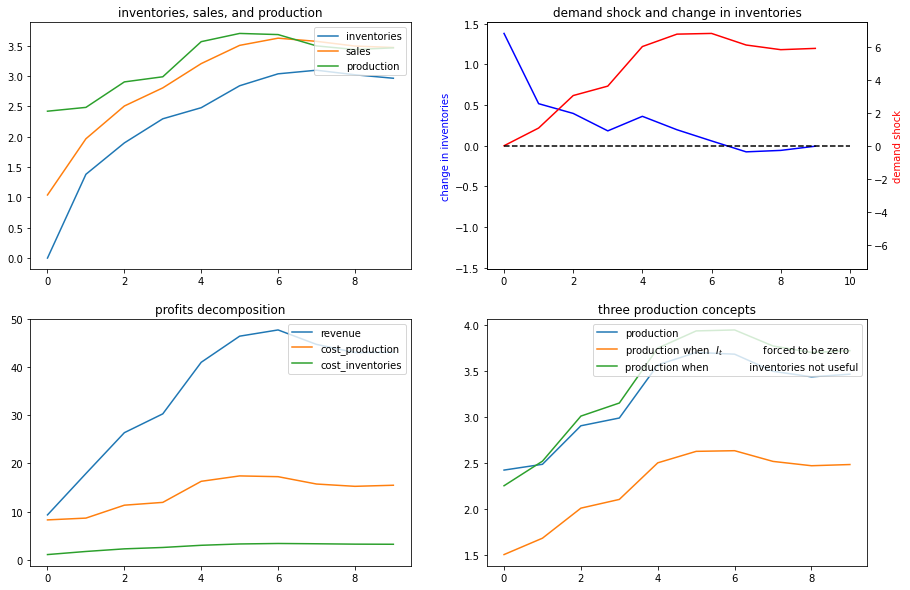
</div>
</div>
</div>
<div class="section" id="example-2">
<h2><a class="toc-backref" href="#id7"><span class="section-number">45.5. </span>Example 2</a><a class="headerlink" href="#example-2" title="Permalink to this headline">¶</a></h2>
<p>Next, we shut down randomness in demand and assume that the demand shock
<span class="math notranslate nohighlight">\(\nu_t\)</span> follows a deterministic path:</p>
<div class="math notranslate nohighlight">
\[
\nu_t = \alpha + \rho \nu_{t-1}
\]</div>
<p>Again, we’ll compute and display outcomes in some figures</p>
<div class="cell docutils container">
<div class="cell_input docutils container">
<div class="highlight-ipython3 notranslate"><div class="highlight"><pre><span></span><span class="n">ex2</span> <span class="o">=</span> <span class="n">SmoothingExample</span><span class="p">(</span><span class="n">C2</span><span class="o">=</span><span class="p">[[</span><span class="mi">0</span><span class="p">],</span> <span class="p">[</span><span class="mi">0</span><span class="p">]])</span>

<span class="n">x0</span> <span class="o">=</span> <span class="p">[</span><span class="mi">0</span><span class="p">,</span> <span class="mi">1</span><span class="p">,</span> <span class="mi">0</span><span class="p">]</span>
<span class="n">ex2</span><span class="o">.</span><span class="n">simulate</span><span class="p">(</span><span class="n">x0</span><span class="p">)</span>
</pre></div>
</div>
</div>
<div class="cell_output docutils container">
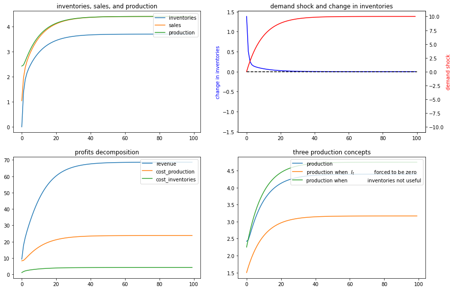
</div>
</div>
</div>
<div class="section" id="example-3">
<h2><a class="toc-backref" href="#id8"><span class="section-number">45.6. </span>Example 3</a><a class="headerlink" href="#example-3" title="Permalink to this headline">¶</a></h2>
<p>Now we’ll put randomness back into the demand shock process and also
assume that there are zero costs of holding inventories.</p>
<p>In particular, we’ll look at a situation in which <span class="math notranslate nohighlight">\(d_1=0\)</span> but
<span class="math notranslate nohighlight">\(d_2&gt;0\)</span>.</p>
<p>Now it becomes optimal to set sales approximately equal to
inventories and to use inventories to smooth production quite well, as
the following figures confirm</p>
<div class="cell docutils container">
<div class="cell_input docutils container">
<div class="highlight-ipython3 notranslate"><div class="highlight"><pre><span></span><span class="n">ex3</span> <span class="o">=</span> <span class="n">SmoothingExample</span><span class="p">(</span><span class="n">d1</span><span class="o">=</span><span class="mi">0</span><span class="p">)</span>

<span class="n">x0</span> <span class="o">=</span> <span class="p">[</span><span class="mi">0</span><span class="p">,</span> <span class="mi">1</span><span class="p">,</span> <span class="mi">0</span><span class="p">]</span>
<span class="n">ex3</span><span class="o">.</span><span class="n">simulate</span><span class="p">(</span><span class="n">x0</span><span class="p">)</span>
</pre></div>
</div>
</div>
<div class="cell_output docutils container">
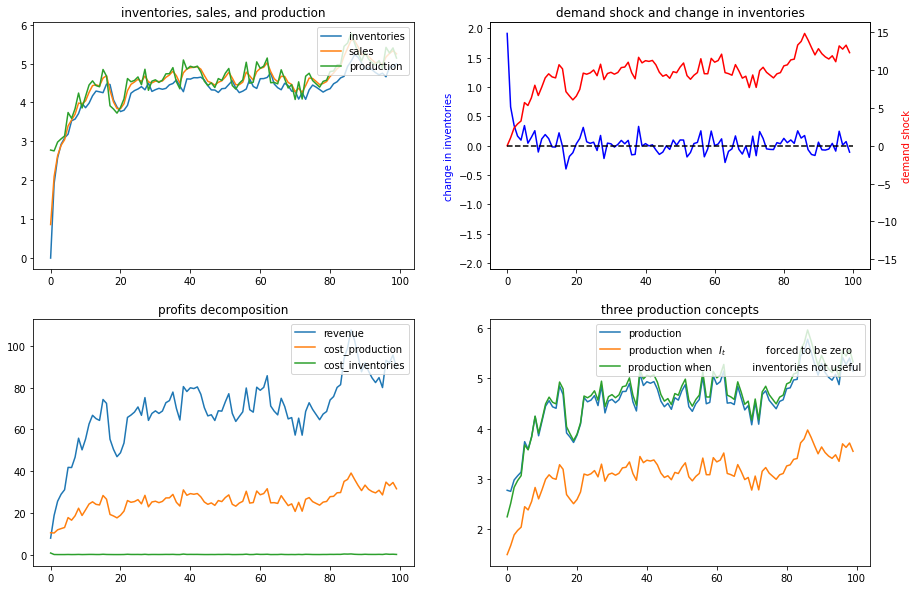
</div>
</div>
</div>
<div class="section" id="example-4">
<h2><a class="toc-backref" href="#id9"><span class="section-number">45.7. </span>Example 4</a><a class="headerlink" href="#example-4" title="Permalink to this headline">¶</a></h2>
<p>To bring out some features of the optimal policy that are related to
some technical issues in linear control theory, we’ll now temporarily
assume that it is costless to hold inventories.</p>
<p>When we completely shut down the cost of holding inventories by setting
<span class="math notranslate nohighlight">\(d_1=0\)</span> and <span class="math notranslate nohighlight">\(d_2=0\)</span>, something absurd happens (because the
Bellman equation is opportunistic and very smart).</p>
<p>(Technically, we have set parameters that end up violating conditions
needed to assure <strong>stability</strong> of the optimally controlled state.)</p>
<p>The firm finds it optimal to set
<span class="math notranslate nohighlight">\(Q_t \equiv Q^* = \frac{-c_1}{2c_2}\)</span>, an output level that sets
the costs of production to zero (when <span class="math notranslate nohighlight">\(c_1 &gt;0\)</span>, as it is with our
default settings, then it is optimal to set production negative,
whatever that means!).</p>
<p>Recall the law of motion for inventories</p>
<div class="math notranslate nohighlight">
\[
I_{t+1} = I_t + Q_t - S_t
\]</div>
<p>So when <span class="math notranslate nohighlight">\(d_1=d_2= 0\)</span> so that the firm finds it optimal to set
<span class="math notranslate nohighlight">\(Q_t = \frac{-c_1}{2c_2}\)</span> for all <span class="math notranslate nohighlight">\(t\)</span>, then</p>
<div class="math notranslate nohighlight">
\[
I_{t+1} - I_t = \frac{-c_1}{2c_2} - S_t &lt; 0
\]</div>
<p>for almost all values of <span class="math notranslate nohighlight">\(S_t\)</span> under our default parameters that
keep demand positive almost all of the time.</p>
<p>The dynamic program instructs the firm to set production costs to zero
and to <strong>run a Ponzi scheme</strong> by running inventories down forever.</p>
<p>(We can interpret this as the firm somehow <strong>going short in</strong> or
<strong>borrowing</strong> inventories)</p>
<p>The following figures confirm that inventories head south without limit</p>
<div class="cell docutils container">
<div class="cell_input docutils container">
<div class="highlight-ipython3 notranslate"><div class="highlight"><pre><span></span><span class="n">ex4</span> <span class="o">=</span> <span class="n">SmoothingExample</span><span class="p">(</span><span class="n">d1</span><span class="o">=</span><span class="mi">0</span><span class="p">,</span> <span class="n">d2</span><span class="o">=</span><span class="mi">0</span><span class="p">)</span>

<span class="n">x0</span> <span class="o">=</span> <span class="p">[</span><span class="mi">0</span><span class="p">,</span> <span class="mi">1</span><span class="p">,</span> <span class="mi">0</span><span class="p">]</span>
<span class="n">ex4</span><span class="o">.</span><span class="n">simulate</span><span class="p">(</span><span class="n">x0</span><span class="p">)</span>
</pre></div>
</div>
</div>
<div class="cell_output docutils container">

</div>
</div>
<p>Let’s shorten the time span displayed in order to highlight what is
going on.</p>
<p>We’ll set the horizon <span class="math notranslate nohighlight">\(T =30\)</span> with the following code</p>
<div class="cell docutils container">
<div class="cell_input docutils container">
<div class="highlight-ipython3 notranslate"><div class="highlight"><pre><span></span><span class="c1"># shorter period</span>
<span class="n">ex4</span><span class="o">.</span><span class="n">simulate</span><span class="p">(</span><span class="n">x0</span><span class="p">,</span> <span class="n">T</span><span class="o">=</span><span class="mi">30</span><span class="p">)</span>
</pre></div>
</div>
</div>
<div class="cell_output docutils container">
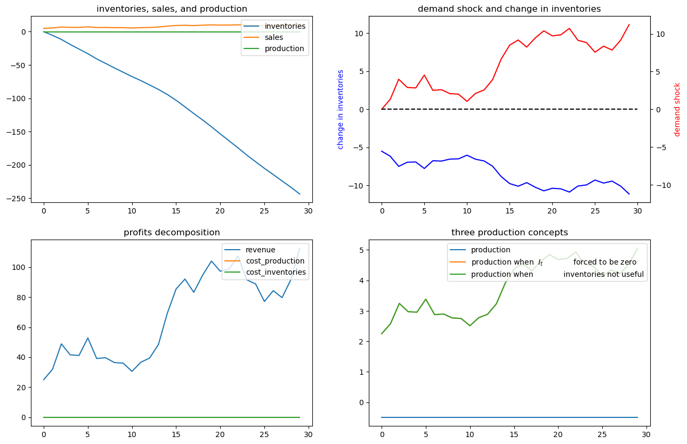
</div>
</div>
</div>
<div class="section" id="example-5">
<h2><a class="toc-backref" href="#id10"><span class="section-number">45.8. </span>Example 5</a><a class="headerlink" href="#example-5" title="Permalink to this headline">¶</a></h2>
<p>Now we’ll assume that the demand shock that follows a linear time trend</p>
<div class="math notranslate nohighlight">
\[
v_t = b + a t  , a&gt; 0, b&gt; 0
\]</div>
<p>To represent this, we set
<span class="math notranslate nohighlight">\(C_2 = \begin{bmatrix} 0 \cr 0 \end{bmatrix}\)</span> and</p>
<div class="math notranslate nohighlight">
\[\begin{split}
A_{22}=\left[\begin{array}{cc}
1 &amp; 0\\
1 &amp; 1
\end{array}\right],x_{0}=\left[\begin{array}{c}
1\\
0
\end{array}\right],
G=\left[\begin{array}{cc}
b &amp; a\end{array}\right]
\end{split}\]</div>
<div class="cell docutils container">
<div class="cell_input docutils container">
<div class="highlight-ipython3 notranslate"><div class="highlight"><pre><span></span><span class="c1"># Set parameters</span>
<span class="n">a</span> <span class="o">=</span> <span class="mf">0.5</span>
<span class="n">b</span> <span class="o">=</span> <span class="mf">3.</span>
</pre></div>
</div>
</div>
</div>
<div class="cell docutils container">
<div class="cell_input docutils container">
<div class="highlight-ipython3 notranslate"><div class="highlight"><pre><span></span><span class="n">ex5</span> <span class="o">=</span> <span class="n">SmoothingExample</span><span class="p">(</span><span class="n">A22</span><span class="o">=</span><span class="p">[[</span><span class="mi">1</span><span class="p">,</span> <span class="mi">0</span><span class="p">],</span> <span class="p">[</span><span class="mi">1</span><span class="p">,</span> <span class="mi">1</span><span class="p">]],</span> <span class="n">C2</span><span class="o">=</span><span class="p">[[</span><span class="mi">0</span><span class="p">],</span> <span class="p">[</span><span class="mi">0</span><span class="p">]],</span> <span class="n">G</span><span class="o">=</span><span class="p">[</span><span class="n">b</span><span class="p">,</span> <span class="n">a</span><span class="p">])</span>

<span class="n">x0</span> <span class="o">=</span> <span class="p">[</span><span class="mi">0</span><span class="p">,</span> <span class="mi">1</span><span class="p">,</span> <span class="mi">0</span><span class="p">]</span> <span class="c1"># set the initial inventory as 0</span>
<span class="n">ex5</span><span class="o">.</span><span class="n">simulate</span><span class="p">(</span><span class="n">x0</span><span class="p">,</span> <span class="n">T</span><span class="o">=</span><span class="mi">10</span><span class="p">)</span>
</pre></div>
</div>
</div>
<div class="cell_output docutils container">
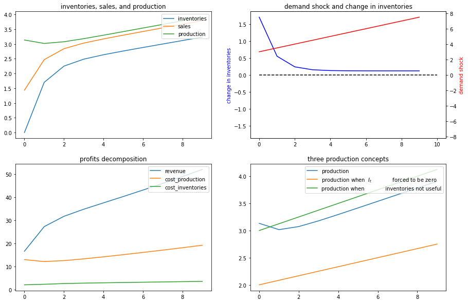
</div>
</div>
</div>
<div class="section" id="example-6">
<h2><a class="toc-backref" href="#id11"><span class="section-number">45.9. </span>Example 6</a><a class="headerlink" href="#example-6" title="Permalink to this headline">¶</a></h2>
<p>Now we’ll assume a deterministically seasonal demand shock.</p>
<p>To represent this we’ll set</p>
<div class="math notranslate nohighlight">
\[
A_{22} = \begin{bmatrix}  1 &amp; 0 &amp; 0 &amp; 0 &amp; 0  \cr 0 &amp; 0 &amp; 0 &amp; 0  &amp; 1 \cr
    0 &amp; 1 &amp; 0 &amp; 0 &amp; 0 \cr
    0 &amp; 0 &amp; 1 &amp; 0 &amp; 0 \cr
    0 &amp; 0 &amp; 0 &amp; 1 &amp; 0 \end{bmatrix},
  C_2 = \begin{bmatrix} 0 \cr 0 \cr 0 \cr 0 \cr 0 \end{bmatrix},  G' = \begin{bmatrix} b \cr a \cr 0 \cr 0 \cr 0
  \end{bmatrix}
\]</div>
<p>where <span class="math notranslate nohighlight">\(a &gt; 0, b&gt;0\)</span> and</p>
<div class="math notranslate nohighlight">
\[
x_0 = \begin{bmatrix} 1 \cr 0 \cr 1 \cr 0 \cr 0 \end{bmatrix}
\]</div>
<div class="cell docutils container">
<div class="cell_input docutils container">
<div class="highlight-ipython3 notranslate"><div class="highlight"><pre><span></span><span class="n">ex6</span> <span class="o">=</span> <span class="n">SmoothingExample</span><span class="p">(</span><span class="n">A22</span><span class="o">=</span><span class="p">[[</span><span class="mi">1</span><span class="p">,</span> <span class="mi">0</span><span class="p">,</span> <span class="mi">0</span><span class="p">,</span> <span class="mi">0</span><span class="p">,</span> <span class="mi">0</span><span class="p">],</span>
                            <span class="p">[</span><span class="mi">0</span><span class="p">,</span> <span class="mi">0</span><span class="p">,</span> <span class="mi">0</span><span class="p">,</span> <span class="mi">0</span><span class="p">,</span> <span class="mi">1</span><span class="p">],</span>
                            <span class="p">[</span><span class="mi">0</span><span class="p">,</span> <span class="mi">1</span><span class="p">,</span> <span class="mi">0</span><span class="p">,</span> <span class="mi">0</span><span class="p">,</span> <span class="mi">0</span><span class="p">],</span>
                            <span class="p">[</span><span class="mi">0</span><span class="p">,</span> <span class="mi">0</span><span class="p">,</span> <span class="mi">1</span><span class="p">,</span> <span class="mi">0</span><span class="p">,</span> <span class="mi">0</span><span class="p">],</span>
                            <span class="p">[</span><span class="mi">0</span><span class="p">,</span> <span class="mi">0</span><span class="p">,</span> <span class="mi">0</span><span class="p">,</span> <span class="mi">1</span><span class="p">,</span> <span class="mi">0</span><span class="p">]],</span>
                       <span class="n">C2</span><span class="o">=</span><span class="p">[[</span><span class="mi">0</span><span class="p">],</span> <span class="p">[</span><span class="mi">0</span><span class="p">],</span> <span class="p">[</span><span class="mi">0</span><span class="p">],</span> <span class="p">[</span><span class="mi">0</span><span class="p">],</span> <span class="p">[</span><span class="mi">0</span><span class="p">]],</span>
                       <span class="n">G</span><span class="o">=</span><span class="p">[</span><span class="n">b</span><span class="p">,</span> <span class="n">a</span><span class="p">,</span> <span class="mi">0</span><span class="p">,</span> <span class="mi">0</span><span class="p">,</span> <span class="mi">0</span><span class="p">])</span>

<span class="n">x00</span> <span class="o">=</span> <span class="p">[</span><span class="mi">0</span><span class="p">,</span> <span class="mi">1</span><span class="p">,</span> <span class="mi">0</span><span class="p">,</span> <span class="mi">1</span><span class="p">,</span> <span class="mi">0</span><span class="p">,</span> <span class="mi">0</span><span class="p">]</span> <span class="c1"># Set the initial inventory as 0</span>
<span class="n">ex6</span><span class="o">.</span><span class="n">simulate</span><span class="p">(</span><span class="n">x00</span><span class="p">,</span> <span class="n">T</span><span class="o">=</span><span class="mi">20</span><span class="p">)</span>
</pre></div>
</div>
</div>
<div class="cell_output docutils container">
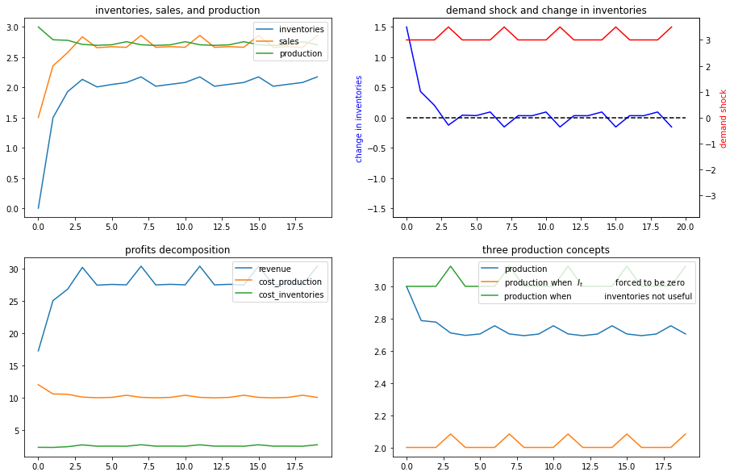
</div>
</div>
<p>Now we’ll generate some more examples that differ simply from the
initial <strong>season</strong> of the year in which we begin the demand shock</p>
<div class="cell docutils container">
<div class="cell_input docutils container">
<div class="highlight-ipython3 notranslate"><div class="highlight"><pre><span></span><span class="n">x01</span> <span class="o">=</span> <span class="p">[</span><span class="mi">0</span><span class="p">,</span> <span class="mi">1</span><span class="p">,</span> <span class="mi">1</span><span class="p">,</span> <span class="mi">0</span><span class="p">,</span> <span class="mi">0</span><span class="p">,</span> <span class="mi">0</span><span class="p">]</span>
<span class="n">ex6</span><span class="o">.</span><span class="n">simulate</span><span class="p">(</span><span class="n">x01</span><span class="p">,</span> <span class="n">T</span><span class="o">=</span><span class="mi">20</span><span class="p">)</span>
</pre></div>
</div>
</div>
<div class="cell_output docutils container">

</div>
</div>
<div class="cell docutils container">
<div class="cell_input docutils container">
<div class="highlight-ipython3 notranslate"><div class="highlight"><pre><span></span><span class="n">x02</span> <span class="o">=</span> <span class="p">[</span><span class="mi">0</span><span class="p">,</span> <span class="mi">1</span><span class="p">,</span> <span class="mi">0</span><span class="p">,</span> <span class="mi">0</span><span class="p">,</span> <span class="mi">1</span><span class="p">,</span> <span class="mi">0</span><span class="p">]</span>
<span class="n">ex6</span><span class="o">.</span><span class="n">simulate</span><span class="p">(</span><span class="n">x02</span><span class="p">,</span> <span class="n">T</span><span class="o">=</span><span class="mi">20</span><span class="p">)</span>
</pre></div>
</div>
</div>
<div class="cell_output docutils container">
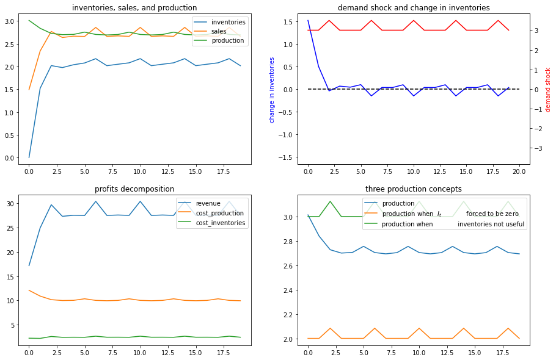
</div>
</div>
<div class="cell docutils container">
<div class="cell_input docutils container">
<div class="highlight-ipython3 notranslate"><div class="highlight"><pre><span></span><span class="n">x03</span> <span class="o">=</span> <span class="p">[</span><span class="mi">0</span><span class="p">,</span> <span class="mi">1</span><span class="p">,</span> <span class="mi">0</span><span class="p">,</span> <span class="mi">0</span><span class="p">,</span> <span class="mi">0</span><span class="p">,</span> <span class="mi">1</span><span class="p">]</span>
<span class="n">ex6</span><span class="o">.</span><span class="n">simulate</span><span class="p">(</span><span class="n">x03</span><span class="p">,</span> <span class="n">T</span><span class="o">=</span><span class="mi">20</span><span class="p">)</span>
</pre></div>
</div>
</div>
<div class="cell_output docutils container">
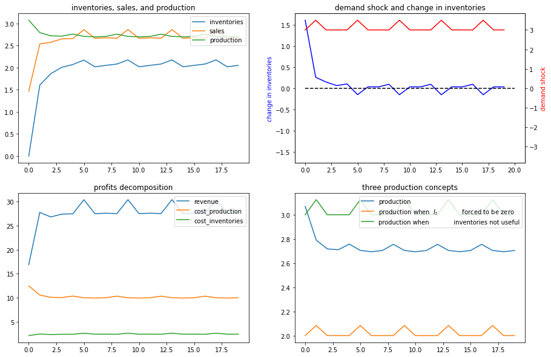
</div>
</div>
</div>
<div class="section" id="exercises">
<h2><a class="toc-backref" href="#id12"><span class="section-number">45.10. </span>Exercises</a><a class="headerlink" href="#exercises" title="Permalink to this headline">¶</a></h2>
<p>Please try to analyze some inventory sales smoothing problems using the
<code class="docutils literal notranslate"><span class="pre">SmoothingExample</span></code> class.</p>
<div class="section" id="exercise-1">
<h3><span class="section-number">45.10.1. </span>Exercise 1<a class="headerlink" href="#exercise-1" title="Permalink to this headline">¶</a></h3>
<p>Assume that the demand shock follows AR(2) process below:</p>
<div class="math notranslate nohighlight">
\[
\nu_{t}=\alpha+\rho_{1}\nu_{t-1}+\rho_{2}\nu_{t-2}+\epsilon_{t}.
\]</div>
<p>where <span class="math notranslate nohighlight">\(\alpha=1\)</span>, <span class="math notranslate nohighlight">\(\rho_{1}=1.2\)</span>, and <span class="math notranslate nohighlight">\(\rho_{2}=-0.3\)</span>.
You need to construct <span class="math notranslate nohighlight">\(A22\)</span>, <span class="math notranslate nohighlight">\(C\)</span>, and <span class="math notranslate nohighlight">\(G\)</span> matrices
properly and then to input them as the keyword arguments of
<code class="docutils literal notranslate"><span class="pre">SmoothingExample</span></code> class. Simulate paths starting from the initial
condition <span class="math notranslate nohighlight">\(x_0 = \left[0, 1, 0, 0\right]^\prime\)</span>.</p>
<p>After this, try to construct a very similar <code class="docutils literal notranslate"><span class="pre">SmoothingExample</span></code> with
the same demand shock process but exclude the randomness
<span class="math notranslate nohighlight">\(\epsilon_t\)</span>. Compute the stationary states <span class="math notranslate nohighlight">\(\bar{x}\)</span> by
simulating for a long period. Then try to add shocks with different
magnitude to <span class="math notranslate nohighlight">\(\bar{\nu}_t\)</span> and simulate paths. You should see how
firms respond differently by staring at the production plans.</p>
</div>
<div class="section" id="exercise-2">
<h3><span class="section-number">45.10.2. </span>Exercise 2<a class="headerlink" href="#exercise-2" title="Permalink to this headline">¶</a></h3>
<p>Change parameters of <span class="math notranslate nohighlight">\(C(Q_t)\)</span> and <span class="math notranslate nohighlight">\(d(I_t, S_t)\)</span>.</p>
<ol class="simple">
<li><p>Make production more costly, by setting <span class="math notranslate nohighlight">\(c_2=5\)</span>.</p></li>
<li><p>Increase the cost of having inventories deviate from sales, by
setting <span class="math notranslate nohighlight">\(d_2=5\)</span>.</p></li>
</ol>
</div>
<div class="section" id="solution-1">
<h3><span class="section-number">45.10.3. </span>Solution 1<a class="headerlink" href="#solution-1" title="Permalink to this headline">¶</a></h3>
<div class="cell docutils container">
<div class="cell_input docutils container">
<div class="highlight-ipython3 notranslate"><div class="highlight"><pre><span></span><span class="c1"># set parameters</span>
<span class="n">α</span> <span class="o">=</span> <span class="mi">1</span>
<span class="n">ρ1</span> <span class="o">=</span> <span class="mf">1.2</span>
<span class="n">ρ2</span> <span class="o">=</span> <span class="o">-.</span><span class="mi">3</span>
</pre></div>
</div>
</div>
</div>
<div class="cell docutils container">
<div class="cell_input docutils container">
<div class="highlight-ipython3 notranslate"><div class="highlight"><pre><span></span><span class="c1"># construct matrices</span>
<span class="n">A22</span> <span class="o">=</span><span class="p">[[</span><span class="mi">1</span><span class="p">,</span>  <span class="mi">0</span><span class="p">,</span>  <span class="mi">0</span><span class="p">],</span>
          <span class="p">[</span><span class="mi">1</span><span class="p">,</span> <span class="n">ρ1</span><span class="p">,</span> <span class="n">ρ2</span><span class="p">],</span>
          <span class="p">[</span><span class="mi">0</span><span class="p">,</span>  <span class="mi">1</span><span class="p">,</span> <span class="mi">0</span><span class="p">]]</span>
<span class="n">C2</span> <span class="o">=</span> <span class="p">[[</span><span class="mi">0</span><span class="p">],</span> <span class="p">[</span><span class="mi">1</span><span class="p">],</span> <span class="p">[</span><span class="mi">0</span><span class="p">]]</span>
<span class="n">G</span> <span class="o">=</span> <span class="p">[</span><span class="mi">0</span><span class="p">,</span> <span class="mi">1</span><span class="p">,</span> <span class="mi">0</span><span class="p">]</span>
</pre></div>
</div>
</div>
</div>
<div class="cell docutils container">
<div class="cell_input docutils container">
<div class="highlight-ipython3 notranslate"><div class="highlight"><pre><span></span><span class="n">ex1</span> <span class="o">=</span> <span class="n">SmoothingExample</span><span class="p">(</span><span class="n">A22</span><span class="o">=</span><span class="n">A22</span><span class="p">,</span> <span class="n">C2</span><span class="o">=</span><span class="n">C2</span><span class="p">,</span> <span class="n">G</span><span class="o">=</span><span class="n">G</span><span class="p">)</span>

<span class="n">x0</span> <span class="o">=</span> <span class="p">[</span><span class="mi">0</span><span class="p">,</span> <span class="mi">1</span><span class="p">,</span> <span class="mi">0</span><span class="p">,</span> <span class="mi">0</span><span class="p">]</span> <span class="c1"># initial condition</span>
<span class="n">ex1</span><span class="o">.</span><span class="n">simulate</span><span class="p">(</span><span class="n">x0</span><span class="p">)</span>
</pre></div>
</div>
</div>
<div class="cell_output docutils container">
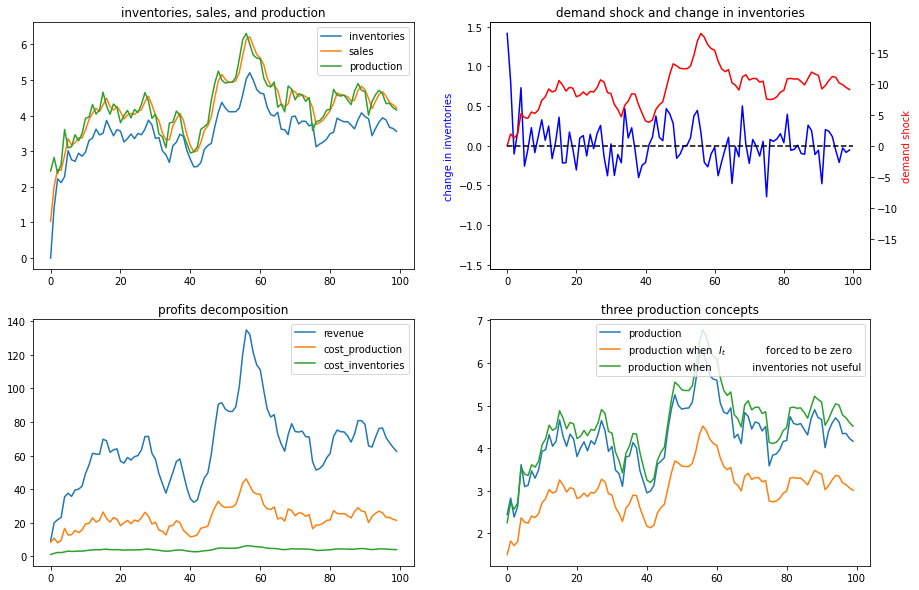
</div>
</div>
<div class="cell docutils container">
<div class="cell_input docutils container">
<div class="highlight-ipython3 notranslate"><div class="highlight"><pre><span></span><span class="c1"># now silence the noise</span>
<span class="n">ex1_no_noise</span> <span class="o">=</span> <span class="n">SmoothingExample</span><span class="p">(</span><span class="n">A22</span><span class="o">=</span><span class="n">A22</span><span class="p">,</span> <span class="n">C2</span><span class="o">=</span><span class="p">[[</span><span class="mi">0</span><span class="p">],</span> <span class="p">[</span><span class="mi">0</span><span class="p">],</span> <span class="p">[</span><span class="mi">0</span><span class="p">]],</span> <span class="n">G</span><span class="o">=</span><span class="n">G</span><span class="p">)</span>

<span class="c1"># initial condition</span>
<span class="n">x0</span> <span class="o">=</span> <span class="p">[</span><span class="mi">0</span><span class="p">,</span> <span class="mi">1</span><span class="p">,</span> <span class="mi">0</span><span class="p">,</span> <span class="mi">0</span><span class="p">]</span>

<span class="c1"># compute stationary states</span>
<span class="n">x_bar</span> <span class="o">=</span> <span class="n">ex1_no_noise</span><span class="o">.</span><span class="n">LQ</span><span class="o">.</span><span class="n">compute_sequence</span><span class="p">(</span><span class="n">x0</span><span class="p">,</span> <span class="n">ts_length</span><span class="o">=</span><span class="mi">250</span><span class="p">)[</span><span class="mi">0</span><span class="p">][:,</span> <span class="o">-</span><span class="mi">1</span><span class="p">]</span>
<span class="n">x_bar</span>
</pre></div>
</div>
</div>
<div class="cell_output docutils container">
<div class="output text_plain highlight-myst-ansi notranslate"><div class="highlight"><pre><span></span>array([ 3.69387755,  1.        , 10.        , 10.        ])
</pre></div>
</div>
</div>
</div>
<p>In the following, we add small and large shocks to <span class="math notranslate nohighlight">\(\bar{\nu}_t\)</span>
and compare how firm responds differently in quantity. As the shock is
not very persistent under the parameterization we are using, we focus on
a short period response.</p>
<div class="cell docutils container">
<div class="cell_input docutils container">
<div class="highlight-ipython3 notranslate"><div class="highlight"><pre><span></span><span class="n">T</span> <span class="o">=</span> <span class="mi">40</span>
</pre></div>
</div>
</div>
</div>
<div class="cell docutils container">
<div class="cell_input docutils container">
<div class="highlight-ipython3 notranslate"><div class="highlight"><pre><span></span><span class="c1"># small shock</span>
<span class="n">x_bar1</span> <span class="o">=</span> <span class="n">x_bar</span><span class="o">.</span><span class="n">copy</span><span class="p">()</span>
<span class="n">x_bar1</span><span class="p">[</span><span class="mi">2</span><span class="p">]</span> <span class="o">+=</span> <span class="mi">2</span>
<span class="n">ex1_no_noise</span><span class="o">.</span><span class="n">simulate</span><span class="p">(</span><span class="n">x_bar1</span><span class="p">,</span> <span class="n">T</span><span class="o">=</span><span class="n">T</span><span class="p">)</span>
</pre></div>
</div>
</div>
<div class="cell_output docutils container">
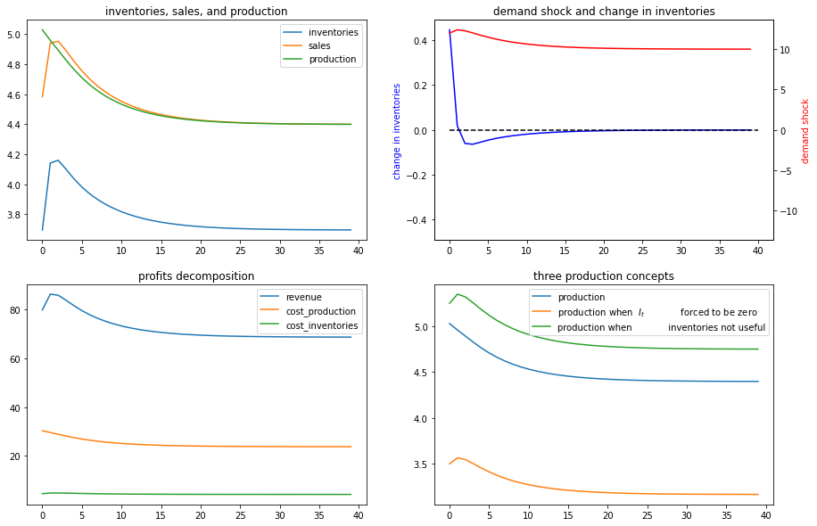
</div>
</div>
<div class="cell docutils container">
<div class="cell_input docutils container">
<div class="highlight-ipython3 notranslate"><div class="highlight"><pre><span></span><span class="c1"># large shock</span>
<span class="n">x_bar1</span> <span class="o">=</span> <span class="n">x_bar</span><span class="o">.</span><span class="n">copy</span><span class="p">()</span>
<span class="n">x_bar1</span><span class="p">[</span><span class="mi">2</span><span class="p">]</span> <span class="o">+=</span> <span class="mi">10</span>
<span class="n">ex1_no_noise</span><span class="o">.</span><span class="n">simulate</span><span class="p">(</span><span class="n">x_bar1</span><span class="p">,</span> <span class="n">T</span><span class="o">=</span><span class="n">T</span><span class="p">)</span>
</pre></div>
</div>
</div>
<div class="cell_output docutils container">
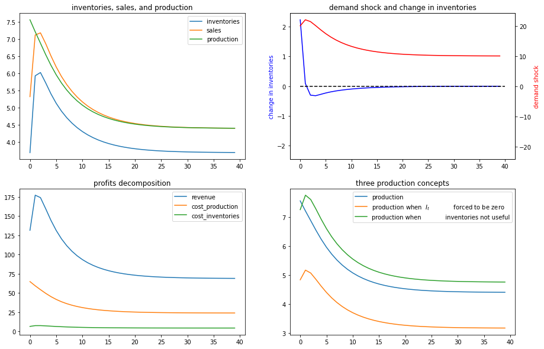
</div>
</div>
</div>
<div class="section" id="solution-2">
<h3><span class="section-number">45.10.4. </span>Solution 2<a class="headerlink" href="#solution-2" title="Permalink to this headline">¶</a></h3>
<div class="cell docutils container">
<div class="cell_input docutils container">
<div class="highlight-ipython3 notranslate"><div class="highlight"><pre><span></span><span class="n">x0</span> <span class="o">=</span> <span class="p">[</span><span class="mi">0</span><span class="p">,</span> <span class="mi">1</span><span class="p">,</span> <span class="mi">0</span><span class="p">]</span>
</pre></div>
</div>
</div>
</div>
<div class="cell docutils container">
<div class="cell_input docutils container">
<div class="highlight-ipython3 notranslate"><div class="highlight"><pre><span></span><span class="n">SmoothingExample</span><span class="p">(</span><span class="n">c2</span><span class="o">=</span><span class="mi">5</span><span class="p">)</span><span class="o">.</span><span class="n">simulate</span><span class="p">(</span><span class="n">x0</span><span class="p">)</span>
</pre></div>
</div>
</div>
<div class="cell_output docutils container">
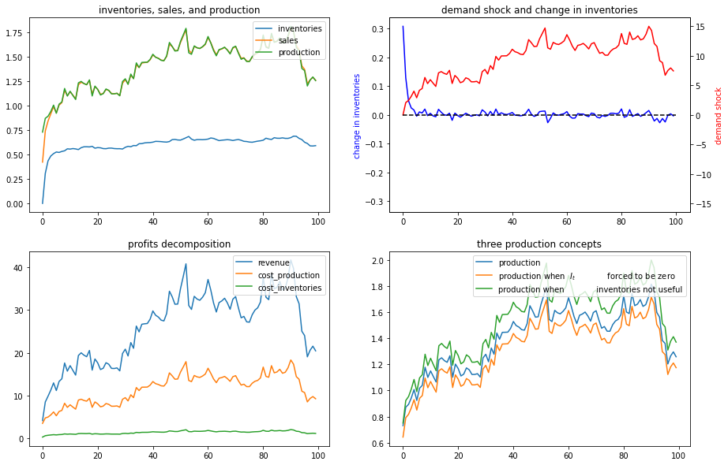
</div>
</div>
<div class="cell docutils container">
<div class="cell_input docutils container">
<div class="highlight-ipython3 notranslate"><div class="highlight"><pre><span></span><span class="n">SmoothingExample</span><span class="p">(</span><span class="n">d2</span><span class="o">=</span><span class="mi">5</span><span class="p">)</span><span class="o">.</span><span class="n">simulate</span><span class="p">(</span><span class="n">x0</span><span class="p">)</span>
</pre></div>
</div>
</div>
<div class="cell_output docutils container">
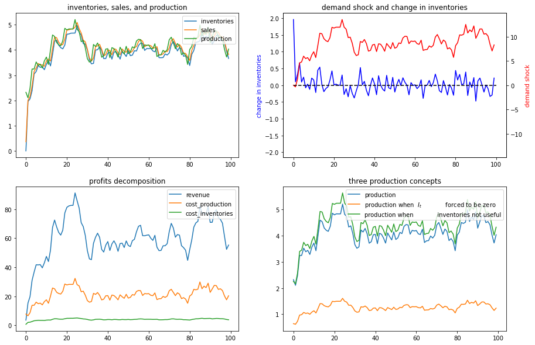
</div>
</div>
</div>
</div>
</div>

    <script type="text/x-thebe-config">
    {
        requestKernel: true,
        binderOptions: {
            repo: "binder-examples/jupyter-stacks-datascience",
            ref: "master",
        },
        codeMirrorConfig: {
            theme: "abcdef",
            mode: "python"
        },
        kernelOptions: {
            kernelName: "python3",
            path: "./."
        },
        predefinedOutput: true
    }
    </script>
    <script>kernelName = 'python3'</script>

                    </div>
                    
                </main> <!-- .page__content -->
                


                <footer class="page__footer">

                    <p><a href="https://creativecommons.org/licenses/by-sa/4.0/"></a></p>

                    <p>Creative Commons License &ndash; This work is licensed under a Creative Commons Attribution-ShareAlike 4.0 International.</p>

                </footer> <!-- .page__footer -->

            </div> <!-- .page -->

            
            <div class="sidebar bd-sidebar inactive" id="site-navigation">

                <div class="sidebar__header">


                    Contents

                </div>

                <nav class="sidebar__nav" id="sidebar-nav" aria-label="Main navigation">
                    <p class="caption">
 <span class="caption-text">
  Tools and Techniques
 </span>
</p>
<ul class="nav sidenav_l1">
 <li class="toctree-l1">
  <a class="reference internal" href="geom_series.html">
   1. Geometric Series for Elementary Economics
  </a>
 </li>
 <li class="toctree-l1">
  <a class="reference internal" href="multi_hyper.html">
   2. Multivariate Hypergeometric Distribution
  </a>
 </li>
 <li class="toctree-l1">
  <a class="reference internal" href="sir_model.html">
   3. Modeling COVID 19
  </a>
 </li>
 <li class="toctree-l1">
  <a class="reference internal" href="linear_algebra.html">
   4. Linear Algebra
  </a>
 </li>
 <li class="toctree-l1">
  <a class="reference internal" href="complex_and_trig.html">
   5. Complex Numbers and Trigonometry
  </a>
 </li>
 <li class="toctree-l1">
  <a class="reference internal" href="lln_clt.html">
   6. LLN and CLT
  </a>
 </li>
 <li class="toctree-l1">
  <a class="reference internal" href="heavy_tails.html">
   7. Heavy-Tailed Distributions
  </a>
 </li>
 <li class="toctree-l1">
  <a class="reference internal" href="multivariate_normal.html">
   8. Multivariate Normal Distribution
  </a>
 </li>
 <li class="toctree-l1">
  <a class="reference internal" href="time_series_with_matrices.html">
   9. Univariate Time Series with Matrix Algebra
  </a>
 </li>
</ul>
<p class="caption">
 <span class="caption-text">
  Introduction to Dynamics
 </span>
</p>
<ul class="nav sidenav_l1">
 <li class="toctree-l1">
  <a class="reference internal" href="scalar_dynam.html">
   10. Dynamics in One Dimension
  </a>
 </li>
 <li class="toctree-l1">
  <a class="reference internal" href="ar1_processes.html">
   11. AR1 Processes
  </a>
 </li>
 <li class="toctree-l1">
  <a class="reference internal" href="finite_markov.html">
   12. Finite Markov Chains
  </a>
 </li>
 <li class="toctree-l1">
  <a class="reference internal" href="inventory_dynamics.html">
   13. Inventory Dynamics
  </a>
 </li>
 <li class="toctree-l1">
  <a class="reference internal" href="linear_models.html">
   14. Linear State Space Models
  </a>
 </li>
 <li class="toctree-l1">
  <a class="reference internal" href="samuelson.html">
   15. Application: The Samuelson Multiplier-Accelerator
  </a>
 </li>
 <li class="toctree-l1">
  <a class="reference internal" href="kesten_processes.html">
   16. Kesten Processes and Firm Dynamics
  </a>
 </li>
 <li class="toctree-l1">
  <a class="reference internal" href="wealth_dynamics.html">
   17. Wealth Distribution Dynamics
  </a>
 </li>
 <li class="toctree-l1">
  <a class="reference internal" href="kalman.html">
   18. A First Look at the Kalman Filter
  </a>
 </li>
 <li class="toctree-l1">
  <a class="reference internal" href="short_path.html">
   19. Shortest Paths
  </a>
 </li>
 <li class="toctree-l1">
  <a class="reference internal" href="cass_koopmans_1.html">
   20. Cass-Koopmans Planning Problem
  </a>
 </li>
 <li class="toctree-l1">
  <a class="reference internal" href="cass_koopmans_2.html">
   21. Cass-Koopmans Competitive Equilibrium
  </a>
 </li>
</ul>
<p class="caption">
 <span class="caption-text">
  Search
 </span>
</p>
<ul class="nav sidenav_l1">
 <li class="toctree-l1">
  <a class="reference internal" href="mccall_model.html">
   22. Job Search I: The McCall Search Model
  </a>
 </li>
 <li class="toctree-l1">
  <a class="reference internal" href="mccall_model_with_separation.html">
   23. Job Search II: Search and Separation
  </a>
 </li>
 <li class="toctree-l1">
  <a class="reference internal" href="mccall_fitted_vfi.html">
   24. Job Search III: Fitted Value Function Iteration
  </a>
 </li>
 <li class="toctree-l1">
  <a class="reference internal" href="mccall_correlated.html">
   25. Job Search IV: Correlated Wage Offers
  </a>
 </li>
 <li class="toctree-l1">
  <a class="reference internal" href="career.html">
   26. Job Search V: Modeling Career Choice
  </a>
 </li>
 <li class="toctree-l1">
  <a class="reference internal" href="jv.html">
   27. Job Search VI: On-the-Job Search
  </a>
 </li>
</ul>
<p class="caption">
 <span class="caption-text">
  Consumption, Savings and Growth
 </span>
</p>
<ul class="nav sidenav_l1">
 <li class="toctree-l1">
  <a class="reference internal" href="cake_eating_problem.html">
   28. Cake Eating I: Introduction to Optimal Saving
  </a>
 </li>
 <li class="toctree-l1">
  <a class="reference internal" href="cake_eating_numerical.html">
   29. Cake Eating II: Numerical Methods
  </a>
 </li>
 <li class="toctree-l1">
  <a class="reference internal" href="optgrowth.html">
   30. Optimal Growth I: The Stochastic Optimal Growth Model
  </a>
 </li>
 <li class="toctree-l1">
  <a class="reference internal" href="optgrowth_fast.html">
   31. Optimal Growth II: Accelerating the Code with Numba
  </a>
 </li>
 <li class="toctree-l1">
  <a class="reference internal" href="coleman_policy_iter.html">
   32. Optimal Growth III: Time Iteration
  </a>
 </li>
 <li class="toctree-l1">
  <a class="reference internal" href="egm_policy_iter.html">
   33. Optimal Growth IV: The Endogenous Grid Method
  </a>
 </li>
 <li class="toctree-l1">
  <a class="reference internal" href="ifp.html">
   34. The Income Fluctuation Problem I: Basic Model
  </a>
 </li>
 <li class="toctree-l1">
  <a class="reference internal" href="ifp_advanced.html">
   35. The Income Fluctuation Problem II: Stochastic Returns on Assets
  </a>
 </li>
</ul>
<p class="caption">
 <span class="caption-text">
  Information
 </span>
</p>
<ul class="nav sidenav_l1">
 <li class="toctree-l1">
  <a class="reference internal" href="odu.html">
   36. Job Search VII: Search with Learning
  </a>
 </li>
 <li class="toctree-l1">
  <a class="reference internal" href="likelihood_ratio_process.html">
   37. Likelihood Ratio Processes
  </a>
 </li>
 <li class="toctree-l1">
  <a class="reference internal" href="wald_friedman.html">
   38. A Problem that Stumped Milton Friedman
  </a>
 </li>
 <li class="toctree-l1">
  <a class="reference internal" href="exchangeable.html">
   39. Exchangeability and Bayesian Updating
  </a>
 </li>
 <li class="toctree-l1">
  <a class="reference internal" href="likelihood_bayes.html">
   40. Likelihood Ratio Processes and Bayesian Learning
  </a>
 </li>
 <li class="toctree-l1">
  <a class="reference internal" href="navy_captain.html">
   41. Bayesian versus Frequentist Decision Rules
  </a>
 </li>
</ul>
<p class="caption">
 <span class="caption-text">
  LQ Control
 </span>
</p>
<ul class="current nav sidenav_l1">
 <li class="toctree-l1">
  <a class="reference internal" href="lqcontrol.html">
   42. LQ Control: Foundations
  </a>
 </li>
 <li class="toctree-l1">
  <a class="reference internal" href="perm_income.html">
   43. The Permanent Income Model
  </a>
 </li>
 <li class="toctree-l1">
  <a class="reference internal" href="perm_income_cons.html">
   44. Permanent Income II: LQ Techniques
  </a>
 </li>
 <li class="toctree-l1 current active">
  <a class="current reference internal" href="#">
   45. Production Smoothing via Inventories
  </a>
 </li>
</ul>
<p class="caption">
 <span class="caption-text">
  Multiple Agent Models
 </span>
</p>
<ul class="nav sidenav_l1">
 <li class="toctree-l1">
  <a class="reference internal" href="schelling.html">
   46. Schelling’s Segregation Model
  </a>
 </li>
 <li class="toctree-l1">
  <a class="reference internal" href="lake_model.html">
   47. A Lake Model of Employment and Unemployment
  </a>
 </li>
 <li class="toctree-l1">
  <a class="reference internal" href="rational_expectations.html">
   48. Rational Expectations Equilibrium
  </a>
 </li>
 <li class="toctree-l1">
  <a class="reference internal" href="re_with_feedback.html">
   49. Stability in Linear Rational Expectations Models
  </a>
 </li>
 <li class="toctree-l1">
  <a class="reference internal" href="markov_perf.html">
   50. Markov Perfect Equilibrium
  </a>
 </li>
 <li class="toctree-l1">
  <a class="reference internal" href="uncertainty_traps.html">
   51. Uncertainty Traps
  </a>
 </li>
 <li class="toctree-l1">
  <a class="reference internal" href="aiyagari.html">
   52. The Aiyagari Model
  </a>
 </li>
</ul>
<p class="caption">
 <span class="caption-text">
  Asset Pricing and Finance
 </span>
</p>
<ul class="nav sidenav_l1">
 <li class="toctree-l1">
  <a class="reference internal" href="markov_asset.html">
   53. Asset Pricing: Finite State Models
  </a>
 </li>
 <li class="toctree-l1">
  <a class="reference internal" href="harrison_kreps.html">
   54. Asset Pricing with Incomplete Markets
  </a>
 </li>
</ul>
<p class="caption">
 <span class="caption-text">
  Data and Empirics
 </span>
</p>
<ul class="nav sidenav_l1">
 <li class="toctree-l1">
  <a class="reference internal" href="pandas_panel.html">
   55. Pandas for Panel Data
  </a>
 </li>
 <li class="toctree-l1">
  <a class="reference internal" href="ols.html">
   56. Linear Regression in Python
  </a>
 </li>
 <li class="toctree-l1">
  <a class="reference internal" href="mle.html">
   57. Maximum Likelihood Estimation
  </a>
 </li>
</ul>
<p class="caption">
 <span class="caption-text">
  Other
 </span>
</p>
<ul class="nav sidenav_l1">
 <li class="toctree-l1">
  <a class="reference internal" href="troubleshooting.html">
   58. Troubleshooting
  </a>
 </li>
 <li class="toctree-l1">
  <a class="reference internal" href="zreferences.html">
   59. References
  </a>
 </li>
</ul>

                </nav>

                <div class="sidebar__footer">

                </div>

            </div> <!-- .sidebar -->
            
        </div> <!-- .main -->

        <div class="toolbar">

            <div class="toolbar__inner">

                <ul class="toolbar__main">
                    <li data-tippy-content="Table of Contents" class="btn__sidebar"><i data-feather="menu"></i></li>
                    <li data-tippy-content="Home"><a href="intro.html"><i data-feather="home"></i></a></li>
                    <li class="btn__qelogo"><a href="https://quantecon.org" title=""><span class="show-for-sr">QuantEcon</span></a></li>
                    <!-- <li class="btn__search">
                        <form action="search.html" method="get">
                            <input type="search" class="form-control" name="q" id="search-input" placeholder="Search the docs ..." aria-label="Search the docs ..." autocomplete="off">
                            <i data-feather="search"></i>
                        </form>
                    </li> -->
                </ul>

                <ul class="toolbar__links">
                    <li data-tippy-content="Fullscreen" class="btn__fullscreen"><i data-feather="maximize"></i></li>
                    <li data-tippy-content="Increase font size" class="btn__plus"><i data-feather="plus-circle"></i></li>
                    <li data-tippy-content="Decrease font size" class="btn__minus"><i data-feather="minus-circle"></i></li>
                    <li data-tippy-content="Change contrast" class="btn__contrast"><i data-feather="sunset"></i></li>
                    <li data-tippy-content="Download Notebook"><a href="_notebooks/lq_inventories.ipynb" download><i data-feather="download-cloud"></i></a></li>
                    <li data-tippy-content="Launch Notebook"><a href="https://mybinder.org/v2/gh/QuantEcon/lecture-python.notebooks/master?urlpath=tree/lq_inventories.ipynb" target="_blank"><i data-feather="play-circle"></i></a></li>
                    <li data-tippy-content="Download PDF" onClick="window.print()"><i data-feather="file"></i></li>
                    <li data-tippy-content="View Source"><a target="_blank" href="https://github.com/QuantEcon/lecture-python.myst/tree/master/lectures/lq_inventories.md" download><i data-feather="github"></i></a></li>
                </ul>

            </div>


        </div> <!-- .toolbar -->

    </div> <!-- .wrapper-->

<script src="_static/plugins.js"></script>
<script src="https://cdnjs.cloudflare.com/ajax/libs/mathjax/2.7.1/MathJax.js?config=TeX-AMS-MML_HTMLorMML"></script>

<script src="https://unpkg.com/@popperjs/core@2"></script>
<script src="https://unpkg.com/tippy.js@6"></script>


    <script src=[></script>

    <script src=]></script>

<script src="_static/scripts.js"></script>
<script>
    feather.replace()
    tippy('[data-tippy-content]');
</script>


  </body>
</html>